<!doctype html>
<html lang="en">
<head>
  <meta charset="utf-8">
  <meta name="viewport" content="width=device-width, initial-scale=1">
  <title>arxiv digest — 2026-10-03</title>
  <style>
:root {
  --bg: #ffffff;
  --fg: #1f2328;
  --muted: #59636e;
  --border: #d0d7de;
  --card: #f6f8fa;
  --link: #0969da;
}
body {
  max-width: 980px;
  margin: 0 auto;
  padding: 2rem 1rem 5rem;
  font-family: -apple-system, BlinkMacSystemFont, "Segoe UI", Helvetica, Arial, sans-serif;
  line-height: 1.55;
  color: var(--fg);
  background: var(--bg);
}
a { color: var(--link); }
img { max-width: 100%; height: auto; }
pre, code { background: var(--card); border-radius: 6px; }
pre { padding: 1rem; overflow-x: auto; }
blockquote { border-left: 4px solid var(--border); padding-left: 1rem; color: var(--muted); }
details { margin: 0.6rem 0; }
summary { cursor: pointer; font-weight: 600; }
.paper-figures-scroll {
  display: flex;
  gap: 1rem;
  overflow-x: auto;
  overscroll-behavior-x: contain;
  padding: 0.75rem 0.25rem 1rem;
  margin: 1rem 0 1.25rem;
  border-top: 1px solid var(--border);
  border-bottom: 1px solid var(--border);
  scroll-snap-type: x proximity;
}
.paper-figure-card {
  flex: 0 0 min(260px, 72vw);
  scroll-snap-align: start;
  background: var(--card);
  border: 1px solid var(--border);
  border-radius: 12px;
  padding: 0.55rem;
}
.paper-figure-card img {
  display: block;
  width: 100%;
  max-height: 240px;
  object-fit: contain;
  background: white;
  border-radius: 8px;
}
.paper-figure-caption {
  display: block;
  margin-top: 0.5rem;
  color: var(--muted);
  font-size: 0.85rem;
}
.figure-strip-hint {
  color: var(--muted);
  font-size: 0.9rem;
  margin-bottom: -0.3rem;
}
</style>
  <!-- MathJax: renders $...$ inline math and $$...$$ display math, plus
       \(...\) and \[...\]. Loaded from the official CDN; works offline
       once cached. Configured to skip code/pre blocks so arxiv IDs that
       look like dollar amounts don't get mangled. -->
  <script>
    window.MathJax = {
      tex: {
        inlineMath: [['$', '$'], ['\\(', '\\)']],
        displayMath: [['$$', '$$'], ['\\[', '\\]']],
        processEscapes: true,
        processEnvironments: true
      },
      options: {
        skipHtmlTags: ['script', 'noscript', 'style', 'textarea', 'pre', 'code'],
        ignoreHtmlClass: 'tex2jax_ignore',
        processHtmlClass: 'tex2jax_process'
      }
    };
  </script>
  <script id="MathJax-script" async
    src="https://cdn.jsdelivr.net/npm/mathjax@3/es5/tex-chtml.js"></script>
</head>
<body>
<header style="background-color: #333; color: white; padding: 15px; margin-bottom: 20px;">
  <h1 style="margin: 0; font-size: 24px;">
    <a href="https://ochelpan.github.io/arXiv_clean/" style="color: white; text-decoration: none;">Main</a>
  </h1>
</header>

<h1>Daily arXiv Report</h1>

<hr>
<p>
<a href="index.html">← Index</a>
 · <a href="papers_01.html">← Previous</a> · <a href="papers_03.html">Next →</a>
</p>
<hr>

<h2>Papers 21–40</h2>
<p><a id="paper-2610.02129"></a></p>
<h3 id="spiking-neural-networks-for-streaming-qubit-readout"><a href="http://arxiv.org/abs/2610.02129v1">Spiking neural networks for streaming qubit readout</a></h3>
<p><strong>Authors:</strong> Barry M. Dillon, Aqib Javed, Jim Harkin, Patryk Dabkowski, Benjamin Lienhard<br>
<strong>Type:</strong> both · <strong>Category:</strong> quantum information and computing · <strong>PDF:</strong> <a href="https://arxiv.org/pdf/2610.02129v1">https://arxiv.org/pdf/2610.02129v1</a><br>
<strong>Analysis basis:</strong> full PDF text, analyzed in chunks
<strong>Topic relevance:</strong> 🔥 <code>QC/QI experiment</code> <strong>4/5</strong> · <code>quantum measurements</code> <strong>3/5</strong> · <code>methods for driven-dissipative</code> <strong>1/5</strong></p>
<div class="figure-strip-hint">↔ Scroll figures horizontally</div>
<div class="paper-figures-scroll">
<figure class="paper-figure-card">
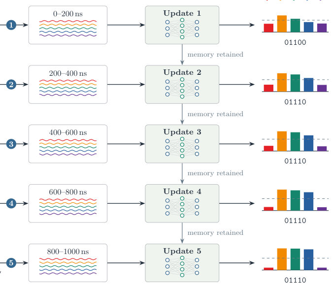
<figcaption class="paper-figure-caption"><b>Fig 1.</b> Figure 1: This figure depicts the real-time updates of the SNN measuring qubits in the 01110 state over 200ns timesteps. The coloured lines represent the demodulated traces for each qubit. These are then averaged and fed directly to the SNN, which updates its internal neuron states and predictions for the qubit readout classes.</figcaption>
</figure>
<figure class="paper-figure-card">
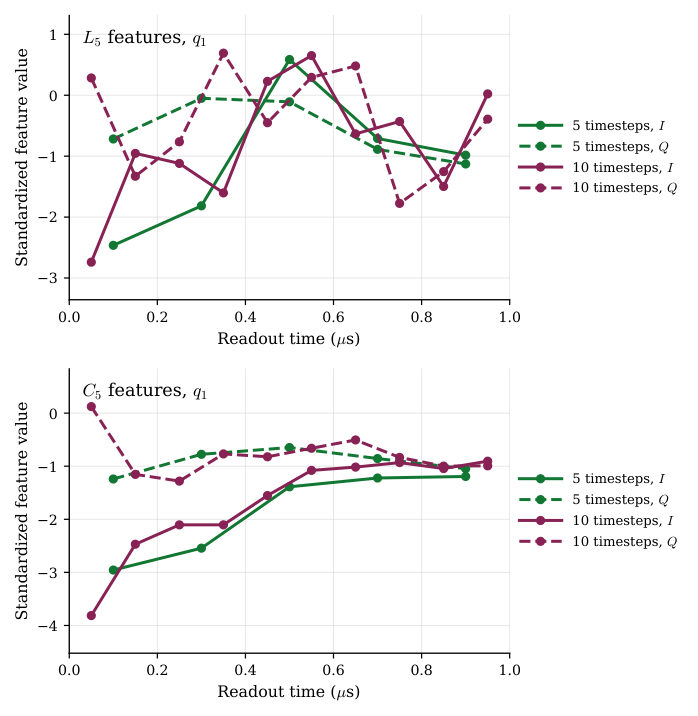
<figcaption class="paper-figure-caption"><b>Fig 2.</b> Figure 2: Local L5 feature values (top) and cumulative C5 feature values (bottom) for q5, comparing T =5 and T =10 readout summaries over the 1 µs acquisition window. Solid lines show the I component and dashed lines show the Q component.</figcaption>
</figure>
<figure class="paper-figure-card">
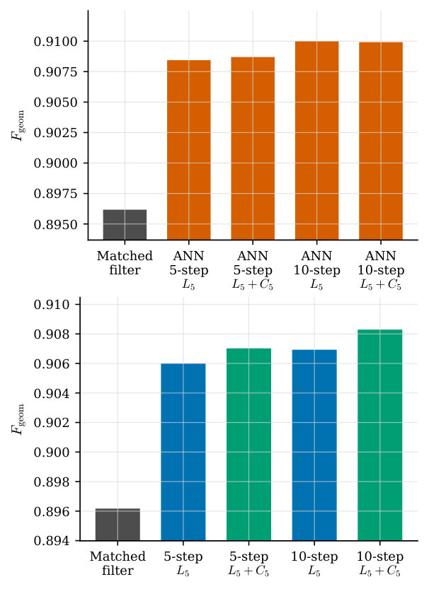
<figcaption class="paper-figure-caption"><b>Fig 3.</b> Figure 3: In the plot, we compare ANN models using the geometric mean assignment fidelity. In the plot below, we compare SNN models with a 64-dim hidden layer using the geometric mean assignment fidelity.</figcaption>
</figure>
<figure class="paper-figure-card">
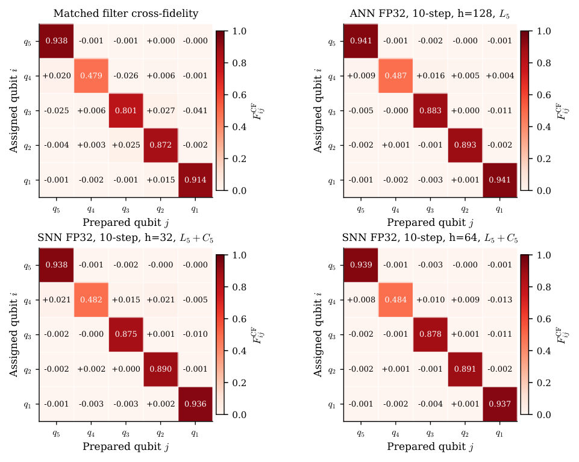
<figcaption class="paper-figure-caption"><b>Fig 4.</b> Figure 4: Cross-fidelity matrices for MF baseline (top left), the ANN baseline (top right), the 32-dim SNN (bottom left), and 64-dim SNN (bottom right). All models use T =10 and the L5 + C5 feature set.</figcaption>
</figure>
<figure class="paper-figure-card">
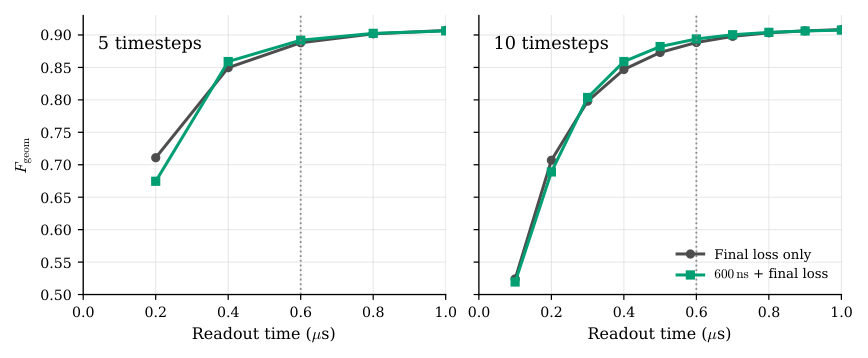
<figcaption class="paper-figure-caption"><b>Fig 5.</b> Figure 5: Mid-readout fidelity for the 64-dim SNN trained on L5 + C5 features. The final- loss-only model is compared with a model trained with equal loss terms at 600 ns and 1 µs. The dotted vertical line marks the auxiliary-loss timestep.</figcaption>
</figure>
</div>

<p><strong>Summary.</strong> This paper introduces Spiking Neural Networks (SNNs) as a solution for real-time, high-fidelity readout of superconducting qubits. By processing measurement data in streaming chunks, the SNNs overcome the latency limitations of traditional methods, achieving performance comparable to full-trace ANNs while being optimized for low-latency deployment on FPGA hardware.</p>
<p><strong>Why it may be interesting.</strong> This work directly addresses the engineering bottleneck of quantum computing—the need for fast, real-time measurement feedback—by integrating advanced neuromorphic computing techniques with superconducting hardware.</p>
<details>
<summary>Detailed structure</summary>
<p><strong>Main problem.</strong> Achieving fast and accurate qubit-state assignment is critical for real-time feedback, calibration, and error correction in quantum processors.</p>
<p><strong>Main result.</strong> Spiking Neural Networks (SNNs) provide a streaming, time-resolved estimate of the qubit state that matches the accuracy of full-trace ANNs while offering low-latency, real-time performance on FPGA hardware.</p>
<p><strong>Method.</strong> The authors propose using SNN discriminators that process the frequency-multiplexed readout measurement window in successive time chunks, exploiting temporal structure.</p>
<p><strong>Model / system.</strong> The work focuses on superconducting qubits, specifically a five-qubit transmon processor, whose state is read out via frequency-multiplexed IQ traces. The analysis is performed on the time-resolved IQ data over the first $1 \mu s$ of acquisition.</p>
<p><strong>Key observables.</strong> Geometric-mean assignment fidelity ($F_{geom}$), single-qubit assignment fidelity ($F_q$), and cross-fidelity matrix ($F_{ij}^{CF}$) to quantify crosstalk.</p>
<p><strong>Important parameters / regimes.</strong> The analysis uses time-resolved IQ traces sampled at $\Delta t = 2 	ext{ ns}$ over a $1 \mu s$ window.</p>
<p><strong>Assumptions / limitations.</strong> The primary assumption is that SNNs can effectively capture the temporal dynamics of the readout signal, overcoming the latency bottleneck of traditional methods.</p>
<p><strong>Figures summary.</strong> Figure 1 illustrates the real-time update process of the SNN measuring qubits over time steps, showing how predictions evolve as new data chunks arrive.</p>
<p><strong>Paper structure.</strong> The paper first establishes the necessity of fast readout for quantum control, details the physical measurement setup and data processing (IQ demodulation), compares SNNs against Matched Filtering and ANNs, and concludes with hardware implementation results on FPGAs.</p>
</details>
<details>
<summary>Abstract</summary>
<p>Fast and accurate qubit-state assignment is essential for feedback, calibration, and error correction in quantum processors. In superconducting platforms, frequency-multiplexed readout makes this task intrinsically multivariate as measured traces can encode crosstalk, qubit-state relaxation events, and other transient nonidealities that are not fully captured by conventional matched filtering. Here, we introduce spiking neural network (SNN) discriminators for superconducting qubit readout. By processing the measurement window in successive time chunks, the networks exploit temporal structure and update classification scores as data arrive, rather than waiting until the end of the readout window. The spiking networks outperform matched-filter discrimination and approach the accuracy of a full-trace artificial neural network. Beyond reaching the performance of artificial neural networks, the key advantage of SNNs is that they provide a streaming, time-resolved estimate of the qubit state that evolves as the readout signal is acquired. Using quantisation-aware training and hls4ml synthesis, we further demonstrate that each FPGA inference update can be completed before the next readout chunk arrives. These results establish spiking neural networks as a promising route to low-latency, real-time qubit readout on FPGA hardware, with broader implications for time-critical quantum-control and scientific-inference applications.</p>
</details>
<p><sub><a href="#top">↑ back to top</a></sub></p>

<p><a id="paper-2610.02080"></a></p>
<h3 id="thin-capping-layer-epitaxial-quantum-dots-for-near-field-quantum-photonics"><a href="http://arxiv.org/abs/2610.02080v1">Thin-capping layer epitaxial quantum dots for near-field quantum photonics</a></h3>
<p><strong>Authors:</strong> Yuting Guo, Jonathan Bar-David, Pasquale Cilibrizzi, Sung-Yul L. Park, Jin Dong Song, Luca Sapienza<br>
<strong>Type:</strong> experiment · <strong>Category:</strong> other · <strong>PDF:</strong> <a href="https://arxiv.org/pdf/2610.02080v1">https://arxiv.org/pdf/2610.02080v1</a><br>
<strong>Analysis basis:</strong> full PDF text, analyzed in chunks
<strong>Topic relevance:</strong> 🔥 <code>quantum optics experiment</code> <strong>4/5</strong> · <code>Tavis-Cummings &amp; cavity-many-emitter</code> <strong>2/5</strong> · <code>interference shaping light</code> <strong>1/5</strong> · <code>quantum measurements</code> <strong>1/5</strong></p>
<div class="figure-strip-hint">↔ Scroll figures horizontally</div>
<div class="paper-figures-scroll">
<figure class="paper-figure-card">
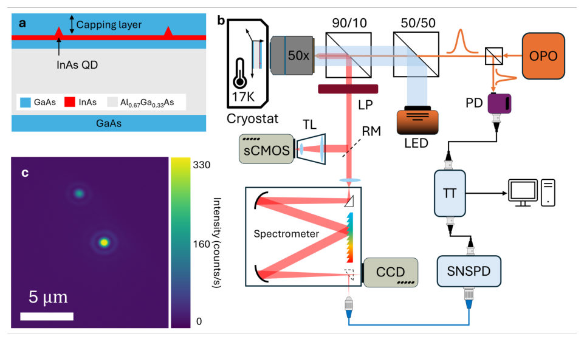
<figcaption class="paper-figure-caption"><b>Fig 1.</b> Figure 1: (a) Schematic of the sample (not to scale). The triangles represent the QD single-photon emitters. The capping layer thickness is highlighted. (b) Schematic of the experimental setup (not to scale). The sample is illuminated through a 50× objective by an LED for imaging and a pulsed laser for spectroscopy and time-resolved measurements. A 90/10 (Reflection/Transmission) beamsplitter reflects the photoluminescence signal towards the collection path. For imaging, photoluminescence is sent onto a scientific Complementary Metal–Oxide–Semiconductor (sCMOS) camera via a tube lens (TL). For spectroscopy, light is dispersed by a spectrometer and recorded by a Charge-Coupled Device (CCD)....</figcaption>
</figure>
<figure class="paper-figure-card">
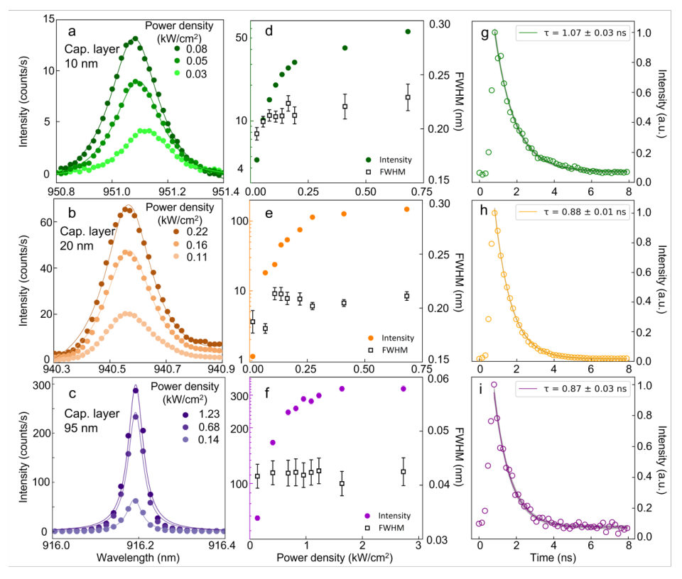
<figcaption class="paper-figure-caption"><b>Fig 2.</b> Figure 2: (a-c) Photoluminescence emission peaks of InAs/GaAs quantum dots (solid circles, 10 nm CL in green, 20 nm CL in orange, 95 nm CL in purple) taken at three different 880 nm laser pump powers, fitted (solid lines) with Lorentzian functions. (d-f) Peak intensity (solid circles) and Full Width Half Maximum (FWHM, black hollow squares) of selected QD lines, plotted as a function of laser excitation power density. (g-i) Time-resolved PL measurements, showing the excited-state decays (empty circles) fitted by an exponential decay curve (solid lines). The lifetime extracted from the fit (τ) is shown in the legend and the shaded grey areas correspond to the 95 % confidence intervals in the...</figcaption>
</figure>
<figure class="paper-figure-card">
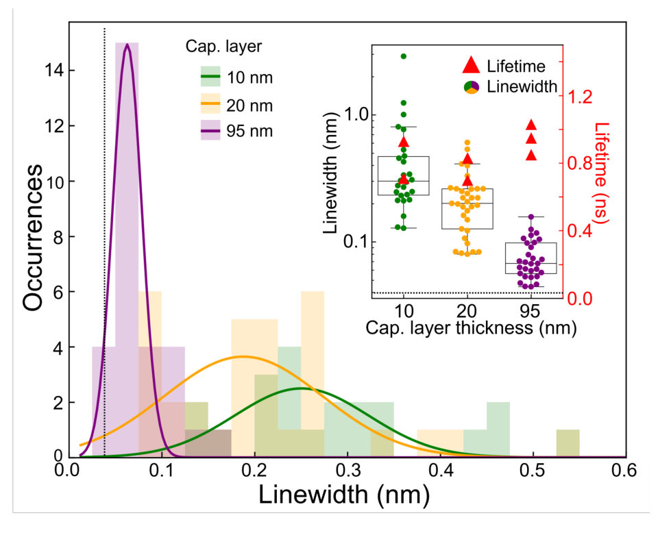
<figcaption class="paper-figure-caption"><b>Fig 3.</b> Figure 3: Histogram of the linewidths of QDs as a function of capping layer (CL) thickness, with the same colour coding as in Fig.2. Inset: distribution of the linewidths as a function of CL thickness. Black boxes indicate the central 50 % of the distribution, with the centre line indicating the median. Whiskers indicate the full data range, excluding outliers. Extracted lifetime values for different capping layer thickness are shown in red triangles. In both the main panel and the inset, a fine dotted line indicates the system resolution limit.</figcaption>
</figure>
<figure class="paper-figure-card">
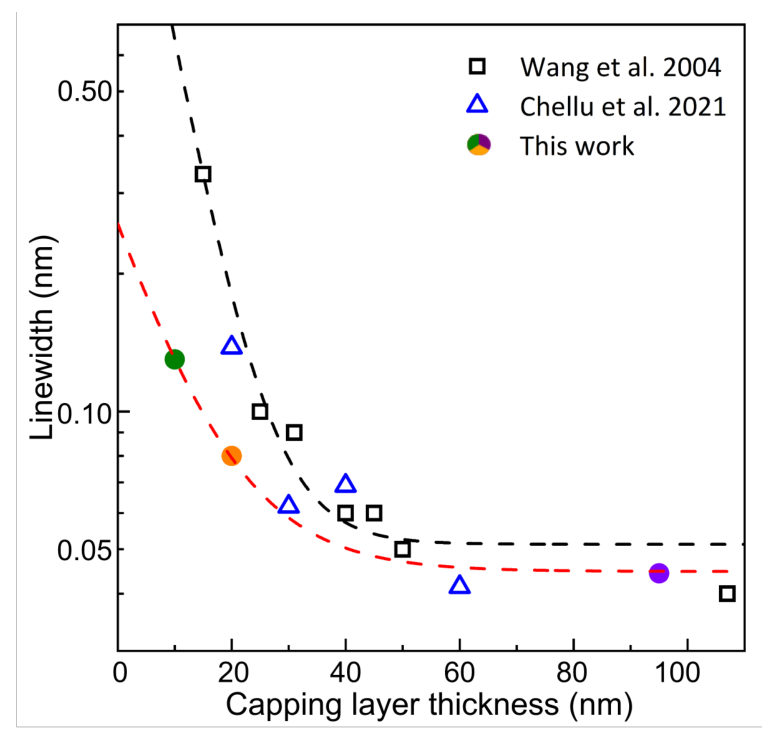
<figcaption class="paper-figure-caption"><b>Fig 4.</b> Figure 4: Collection of InAs/GaAs QD narrowest emission linewidths, plotted as a function of capping layer thickness (colored solid circles), compared with linewidth values from previous reports.28,33 The black dashed line is an exponential fit to Wang et al.’s data.28 The red dashed line shows the exponential fit to our data.</figcaption>
</figure>
</div>

<p><strong>Summary.</strong> This paper reports on the growth and optical characterization of InAs/GaAs quantum dots capped with very thin layers. The key finding is that these QDs maintain excellent optical quality, including narrow linewidths and long lifetimes, even when placed close to the surface. This breakthrough opens a viable path for utilizing these stable emitters in near-field quantum photonic applications.</p>
<p><strong>Why it may be interesting.</strong> This work is highly relevant to open quantum systems and quantum optics as it experimentally validates a pathway to integrate stable quantum emitters into plasmonic/near-field photonic devices, a key goal in quantum technology.</p>
<details>
<summary>Detailed structure</summary>
<p><strong>Main problem.</strong> The challenge is to enable near-field quantum photonics applications by bringing quantum emitters close to metallic structures while maintaining the high optical quality of the quantum dots.</p>
<p><strong>Main result.</strong> The study demonstrates that InAs/GaAs quantum dots maintain high optical quality, exhibiting significantly narrow emission linewidths and stable excitonic lifetimes even when capped with very thin GaAs layers (10-20 nm).</p>
<p><strong>Method.</strong> The research involved growing InAs/GaAs QDs using MBE with varying GaAs capping layer thicknesses (10 nm, 20 nm, 95 nm) and characterizing them using micro-photoluminescence, time-resolved PL, and spectroscopy.</p>
<p><strong>Model / system.</strong> The physical system is InAs/GaAs epitaxial quantum dots. The experiment varies the thickness of the GaAs capping layer (CL) to control the proximity of the emitter to the surface, which is critical for near-field light-matter interactions.</p>
<p><strong>Key observables.</strong> Emission linewidths (observed up to 5 times smaller than previous reports), excitonic lifetimes ($\sim 0.9-1.1$ ns), and PL spectra evolution.</p>
<p><strong>Important parameters / regimes.</strong> GaAs capping layer thickness (10 nm, 20 nm, 95 nm); near-field separation (tens of nanometers or less).</p>
<p><strong>Assumptions / limitations.</strong> The good optical quality in thin-capped structures suggests that detrimental surface effects are mitigated in these specific QDs, allowing for near-field coupling.</p>
<p><strong>Figures summary.</strong> Figures show PL spectra evolution with power, linewidth/intensity vs. power density, and time-resolved PL measurements confirming stable lifetimes across different capping layer thicknesses.</p>
<p><strong>Paper structure.</strong> The paper establishes the need for near-field coupling, presents the experimental growth and characterization of QDs with varying thin capping layers, and reports measurements showing preserved optical quality despite reduced separation from the surface.</p>
</details>
<details>
<summary>Abstract</summary>
<p>Epitaxial quantum dots (QDs) are widely recognised as one of the best quantum light sources, given their good stability, brightness, quantum efficiency and coherence. To reach such properties, QDs are protected from potentially detrimental surface states by a relatively thick capping layer, typically exceeding 50nm. This prevents the implementation of near-field effects, like plasmonic-based ones, that can dramatically increase the light-matter interaction, since the control of the spontaneous emission dynamics and directionality of the emission can only occur if the emitter is in close proximity (typically tens of nanometers or less) from the metallic structures. In this work, we report the growth and optical characterisation of InAs/GaAs QDs with GaAs capping layer thickness of 10nm, 20nm, and a more standard 95nm. Remarkably, we observe emission linewidths up to 5 times smaller than previously reported, with unperturbed excitonic lifetimes. These results demonstrate that the epitaxial QD's high optical quality can be maintained even when the emitters are at reduced distances from the surface, opening the path for the exploration of near-field light-matter interactions with coherent and stable emitters, suitable for quantum technology applications.</p>
</details>
<p><sub><a href="#top">↑ back to top</a></sub></p>

<p><a id="paper-2610.00783"></a></p>
<h3 id="real-time-adaptive-filtering-and-the-boxcar-limit-in-superconducting-qubit-readout"><a href="http://arxiv.org/abs/2610.00783v1">Real-Time Adaptive Filtering and the Boxcar Limit in Superconducting Qubit Readout</a></h3>
<p><strong>Authors:</strong> Hans Johnson, Tanay Roy, Leonardo Bove, David van Zanten, Silvia Zorzetti, Jafar Saniie<br>
<strong>Type:</strong> experiment · <strong>Category:</strong> quantum information and computing · <strong>PDF:</strong> <a href="https://arxiv.org/pdf/2610.00783v1">https://arxiv.org/pdf/2610.00783v1</a><br>
<strong>Analysis basis:</strong> full PDF text, analyzed in chunks
<strong>Topic relevance:</strong> 🔥 <code>QC/QI experiment</code> <strong>4/5</strong> · <code>quantum measurements</code> <strong>3/5</strong></p>
<div class="figure-strip-hint">↔ Scroll figures horizontally</div>
<div class="paper-figures-scroll">
<figure class="paper-figure-card">
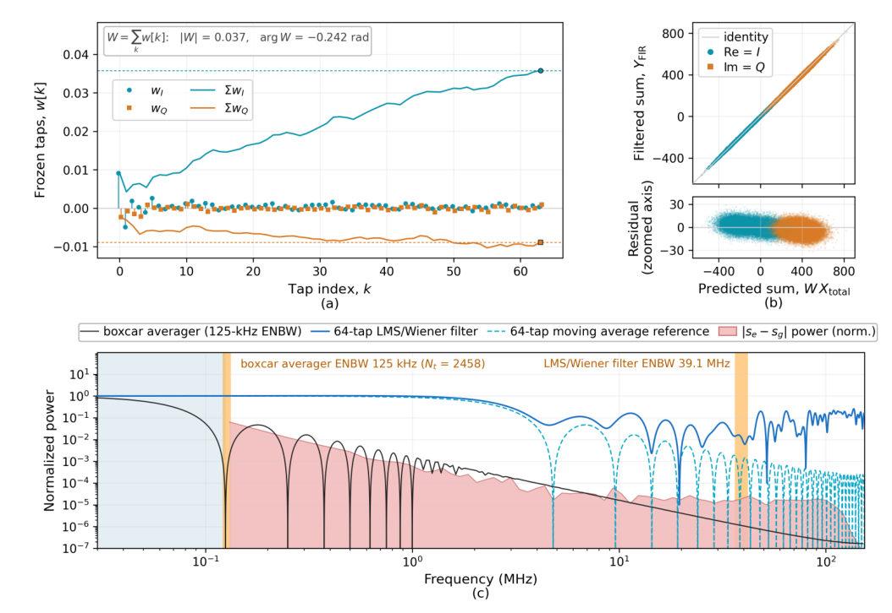
<figcaption class="paper-figure-caption"><b>Fig 1.</b> Fig. 1. The kernel collapse on the deployed instrument [Q1 (transmon) at Readout Length (RL) 8 µs; 50,000 shots per class, half held out for testing]. (a) The frozen 64-tap coefficient vector, trained on-fabric with the qubit prepared in |g⟩and read back over DMA in Q27.16 fixed-point format. The running-sum overlay accumulates the taps to the collapse scalar W, with |W| = 0.037 and arg W = −0.242 rad [exp.]. (b) The scalar approximation of Eq. 5, tested on held-out shots from both classes. Each shot’s filtered window sum YFIR is plotted against WXtotal, with W from the taps in (a) and Xtotal the raw boxcar statistic of Eq. 5; nothing was fitted. The points lie close to the identity line,...</figcaption>
</figure>
<figure class="paper-figure-card">
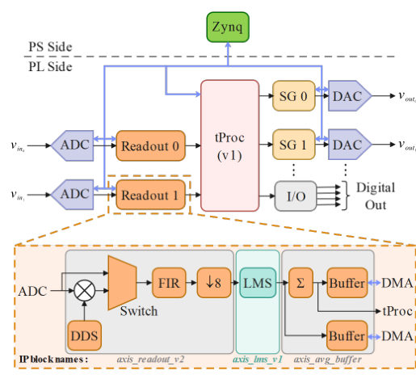
<figcaption class="paper-figure-caption"><b>Fig 2.</b> Fig. 2. The instrument in the QICK readout chain. The Zynq Processing System (PS) accesses the readout and control blocks in the Programmable Logic (PL). These blocks connect the converters (ADC, DAC), two read- out channels, timed processor (tProc), signal generators, and digital I/O. The expanded readout-1 path shows DDS downconversion, FIR filtering, and decimation by eight (axis_readout_v2) feeding the LMS filter (axis_lms_v1, teal; Fig. 3). Its output enters the accumulate-and-buffer stage (axis_avg_buffer), and the windowed sum feeds the tProc. The buffers transfer data to the host by Direct Memory Access (DMA). Blue arrows mark PS-side access. Panels redrawn from [17] with the...</figcaption>
</figure>
<figure class="paper-figure-card">
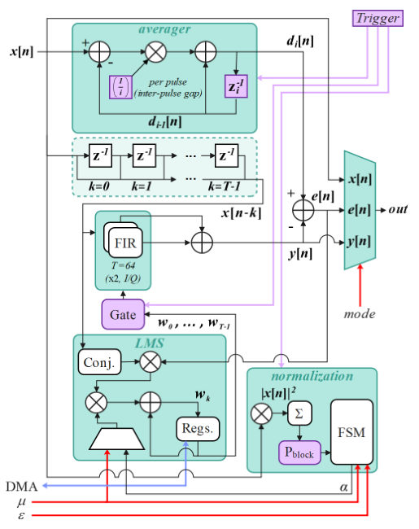
<figcaption class="paper-figure-caption"><b>Fig 3.</b> Fig. 3. Adaptive filter (axis_lms_v1) firmware block diagram. The averager forms the reference di[n] across pulses (z−1 i : a one-pulse delay at fixed sample position n). The FIR filter and the LMS blocks share one tapped delay line. The LMS block conjugates the regressor, scales the gradient, and integrates it into the weight registers. A pulse-boundary gate releases the updated weights to the FIR, closing the adaptation loop. A reciprocal Finite- State Machine (FSM) forms the per-pulse step α in the normalization block (Eq. 16). Black lines indicate AXI4-Stream (AXIS) datapaths, red lines denote run-time user input via AXI4-Lite (AXI), blue lines are DMA PS-side access, and purple denotes...</figcaption>
</figure>
<figure class="paper-figure-card">
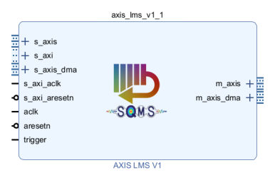
<figcaption class="paper-figure-caption"><b>Fig 4.</b> Fig. 4. Packaged adaptive-filter IP in the Vivado block-design integrator. AXI4-Stream ports carry readout samples input/output and coefficient trans- fers with an external DMA. AXI4-Lite provides user-defined variables via reg- ister access during experiments. The tProc trigger coordinates pulse-boundary operations. Stream and configuration interfaces have separate clock/reset pairs.</figcaption>
</figure>
<figure class="paper-figure-card">
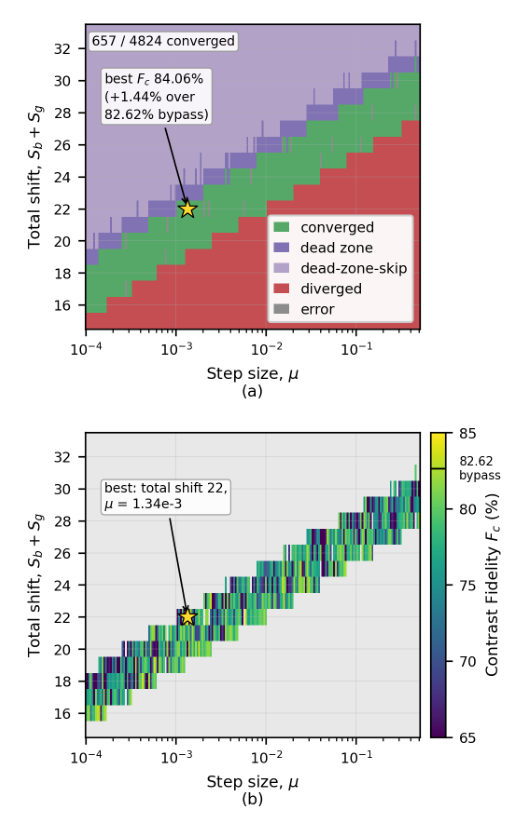
<figcaption class="paper-figure-caption"><b>Fig 5.</b> Fig. 5. The convergence regime of the transmon (Q1) training sweep [exp.]. (a) Regime map over step size µ and total shift Sb + Sg, each configuration classed as converged, dead-zone (the amplitude-floor regime of Eq. 20), dead- zone-skip, diverged, or error. The 1514 dead-zone-skip configurations were not measured, and the floor’s monotonicity in total shift records them as dead. Every configuration below the cropped axis range (total shift 15–33) diverged. (b) Contrast readout fidelity Fc of the 657 configurations classified as converged.</figcaption>
</figure>
</div>

<p><strong>Summary.</strong> This work analyzes the limits of superconducting qubit readout fidelity by comparing adaptive filtering techniques against standard boxcar averaging. The key finding is that while filtering reduces noise, the fundamental measurement process imposes a 'boxcar limit,' meaning advanced digital processing alone cannot significantly improve state discrimination beyond optimized fixed-window averaging.</p>
<p><strong>Why it may be interesting.</strong> It provides a rigorous, quantitative analysis of the fundamental limits imposed by the measurement process itself, separating hardware noise mitigation from the actual decision-making capability of the readout circuit.</p>
<details>
<summary>Detailed structure</summary>
<p><strong>Main problem.</strong> The paper investigates whether advanced digital signal processing, such as adaptive filtering, can improve the readout fidelity of superconducting qubits beyond the performance achievable with standard boxcar averaging.</p>
<p><strong>Main result.</strong> The study found that while adaptive filtering successfully reduced trace noise, it did not lead to a resolved improvement in the state discrimination signal-to-noise ratio ($ ext{SNR}_{  ext{disc}}$) compared to optimized boxcar averaging.</p>
<p><strong>Method.</strong> The authors compared the performance of a real-time trained LMS filter against boxcar averaging and sequential detection methods on superconducting qubit readout signals.</p>
<p><strong>Model / system.</strong> The experiment uses superconducting qubits, specifically 2D transmon qubits (Q1) and 3D ancilla qubits (Q2), read out via dispersive coupling. The readout process involves digitizing the resonator response signal.</p>
<p><strong>Key observables.</strong> Fidelity (contrast readout fidelity), Signal-to-Noise Ratio ($ ext{SNR}<em ext_decide="ext{decide">{  ext{disc}}$), and mean decision time ($   ext{E}[t</em>]$).}</p>
<p><strong>Important parameters / regimes.</strong> Readout window length (e.g., 8 $\mu$s), the boxcar limit, and the LMS filter's performance relative to the theoretical matched-filter ceiling.</p>
<p><strong>Assumptions / limitations.</strong> The analysis distinguishes between waveform denoising (which can be improved) and the actual decision improvement, suggesting the boxcar limit constrains the achievable discrimination gain.</p>
<p><strong>Figures summary.</strong> Figures illustrate the kernel collapse identity, comparing the spectral power distribution of the signal difference, and showing fidelity accrual over integration time for different readout methods.</p>
<p><strong>Paper structure.</strong> The paper establishes the baseline (boxcar averaging), tests the adaptive filter (LMS) for noise reduction, and then compares the resulting discrimination SNR against theoretical limits and optimized windowing/sequential detection methods.</p>
</details>
<details>
<summary>Abstract</summary>
<p>In dispersive readout of superconducting qubits, the common baseline is a boxcar averager: a uniformly weighted average over a fixed window followed by threshold-based state assignment. We ask when additional digital processing improves fidelity. We evaluated an adaptive finite-impulse-response (FIR) filter trained in real time by the least-mean-squares (LMS) algorithm on an FPGA quantum controller, and analyzed measured readout shots offline to compare the frozen filter with boxcar averaging and to test per-sample weighting and sequential detection.   For the fixed FIR filters tested, summing the filtered samples gives the boxcar sum multiplied by one complex number, apart from a small edge correction (the kernel collapse). This scales state separation and noise equally, so discrimination cannot improve (the boxcar limit).   The frozen LMS filter reduces trace noise without a resolved fidelity improvement at the tested readout lengths. Replayed on the same shots offline, each filtered shot carries 99.4% of the boxcar shot's discrimination signal-to-noise ratio at the 8 $μ$s operating point of the 2D transmon qubit (Q1).   On Q1, optimizing the readout window's start and duration improves contrast readout fidelity by +2.4% to +5.6% across four readout lengths. Per-sample weighting adds up to +3.0% over full-window integration, and only +0.33% beyond the tuned window at 8 $μ$s.   Remaining results are from a 3D ancilla qubit (Q2), which sits above the early-decision crossover that Q1 sits below. Hardware sweeps locate the crossover window near 1 $μ$s. Offline, the sequential test decided most shots early, with fidelity within 0.5 percentage points of the boxcar. About 30 labeled shots per class build a matched-filter template nearly as good as one from hundreds.   The results form an operating-point record that separates waveform denoising from decision improvement.</p>
</details>
<p><sub><a href="#top">↑ back to top</a></sub></p>

<p><a id="paper-2610.01117"></a></p>
<h3 id="microscopic-insights-into-the-quarkyonic-hadron-quark-crossover-lessons-from-ultracold-fermi-gases"><a href="http://arxiv.org/abs/2610.01117v1">Microscopic Insights into the Quarkyonic Hadron--Quark Crossover: Lessons from Ultracold Fermi Gases</a></h3>
<p><strong>Authors:</strong> Hiroyuki Tajima<br>
<strong>Type:</strong> theory · <strong>Category:</strong> quantum gases · <strong>PDF:</strong> <a href="https://arxiv.org/pdf/2610.01117v1">https://arxiv.org/pdf/2610.01117v1</a><br>
<strong>Analysis basis:</strong> full PDF text, analyzed in chunks
<strong>Topic relevance:</strong> 🔥 <code>analog quantum simulation</code> <strong>4/5</strong> · <code>Keldysh / 2PI / non-Gaussian methods</code> <strong>2/5</strong></p>
<div class="figure-strip-hint">↔ Scroll figures horizontally</div>
<div class="paper-figures-scroll">
<figure class="paper-figure-card">
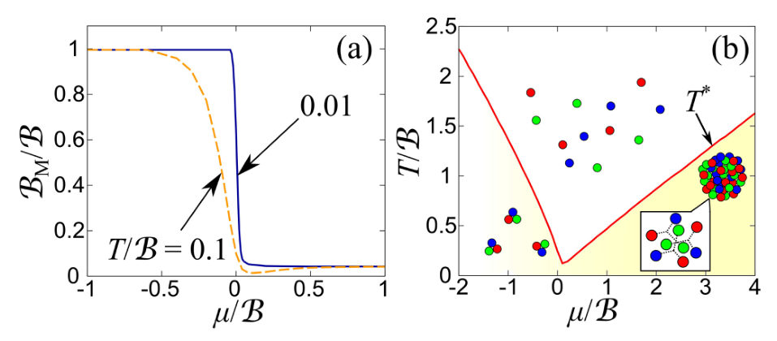
<figcaption class="paper-figure-caption"><b>Fig 1.</b> Figure 1: (a) In-medium binding energy BM at T/B = 0.01 and 0.1. (b) Schematic grand-canonical diagram: the line T ∗marks the Mott temperature where the in-medium three-body bound-state energy vanishes. Adapted with modified labels and colors from Figs. 2 and 4 of H. Tajima, S. Tsutsui, T. M. Doi, and K. Iida, “Cooper triples in attractive three-component fermions: Implication for hadron-quark crossover,” Phys. Rev. Research 4, L012021 (2022) [25], https://doi.org/10.1103/PhysRevResearch.4.L012021, licensed under CC BY 4.0 (https: //creativecommons.org/licenses/by/4.0/).</figcaption>
</figure>
<figure class="paper-figure-card">
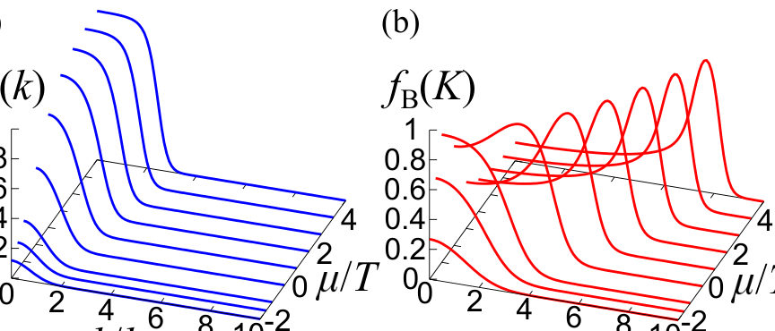
<figcaption class="paper-figure-caption"><b>Fig 2.</b> Figure 2: Momentum distributions of (a) quark-like constituents and (b) baryon-like three-body correlations at T/B = 0.2, with kT = √</figcaption>
</figure>
<figure class="paper-figure-card">
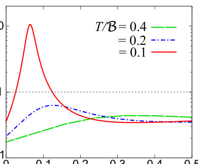
<figcaption class="paper-figure-caption"><b>Fig 3.</b> Figure 3: Squared isothermal speed of sound c2 s normalized by v2 F, where vF = πn/(3m); the dotted line marks the high-density limit. Reproduced from Fig. 3 of H. Tajima, K. Iida, T. Kojo, and H. Liang, “Tripling Fluctuations and Peaked Sound Speed in Fermionic Matter,” Phys. Rev. Lett. 135, 042701 (2025) [26], https://doi.org/10.1103/4ywp-752m, licensed under CC BY 4.0 (https://creativecommons.org/ licenses/by/4.0/).</figcaption>
</figure>
</div>

<p><strong>Summary.</strong> This paper develops a theoretical framework by mapping the hadron-quark crossover onto the physics of three-body crossovers seen in ultracold Fermi gases. It demonstrates that the mechanism causing a momentum shell formation—the interplay between bound states and the continuum—is responsible for predicting a characteristic peak in the speed of sound in dense QCD matter. This provides a concrete, calculable link between cold atom physics and astrophysics.</p>
<p><strong>Why it may be interesting.</strong> The direct analogy drawn between the well-understood BEC-BCS crossover in ultracold atoms and the exotic physics of the hadron-quark crossover provides a powerful, calculable theoretical tool for condensed matter/AMO theorists.</p>
<details>
<summary>Detailed structure</summary>
<p><strong>Main problem.</strong> The paper addresses the challenge of understanding the continuous crossover from hadronic matter to quark matter at high baryon density.</p>
<p><strong>Main result.</strong> The authors show that the interplay between a three-body bound-state pole and the scattering continuum generates a baryonic momentum shell, which in turn causes a peak in the speed of sound in the crossover region.</p>
<p><strong>Method.</strong> The analysis employs fluctuation theory, drawing an analogy between the BEC-BCS crossover in ultracold Fermi gases and the three-body crossover in dense QCD matter.</p>
<p><strong>Model / system.</strong> The model uses a three-component Fermi gas with an attractive three-body contact interaction to simulate the baryon formation process, connecting it to quarkyonic matter.</p>
<p><strong>Key observables.</strong> Speed of sound ($c_s^2$), baryonic momentum distribution ($f_B(K)$), and the in-medium three-body binding energy ($B_M$).</p>
<p><strong>Important parameters / regimes.</strong> High baryon density, low temperatures, and the three-body coupling strength ($V_3$).</p>
<p><strong>Assumptions / limitations.</strong> The analysis relies on the pole-continuum cancellation mechanism and approximations regarding the occupied continuum weight.</p>
<p><strong>Figures summary.</strong> Figures illustrate the momentum distributions of quark and baryon constituents, and plot the squared isothermal speed of sound, showing a pronounced maximum in the crossover region.</p>
<p><strong>Paper structure.</strong> The paper reviews the theoretical framework by first establishing the BEC-BCS analogy, then developing the three-body fluctuation theory using T-matrix calculations, and finally applying this mechanism to predict observable features like the momentum shell and speed of sound peak in the context of QCD.</p>
</details>
<details>
<summary>Abstract</summary>
<p>In neutron-star and dense quantum chromodynamics (QCD) physics, it is important to understand how baryonic matter evolves into quark matter at high density. A continuous hadron--quark crossover is one of the most attractive candidates because it can reconcile the comparatively soft equation of state around nuclear density with the rapid stiffening required to support massive neutron stars. Recent neutron-star observations motivate equations of state that stiffen rapidly across the intermediate-density regime, while quarkyonic-matter descriptions feature a shell-like baryon momentum distribution there. In this paper, we review our recent work on the microscopic description and interpretation of these phenomena by drawing an analogy with the Bose--Einstein condensate (BEC) to Bardeen--Cooper--Schrieffer (BCS) crossover in ultracold Fermi gases and two-color QCD. As pairing fluctuations play a crucial role in the BEC--BCS crossover, we discuss the role of its three-body counterpart, that is, tripling fluctuations associated with baryon formation in the hadron--quark crossover. In terms of a phase-shift representation of tripling fluctuations, the interplay between a three-body bound-state pole and the scattering continuum suppresses low-momentum baryonic occupation, generates a baryonic momentum shell, and reduces the density susceptibility, thereby producing a peak in the speed of sound. We review the demonstration of this mechanism in a one-dimensional three-component Fermi gas, its relativistic extension, and its connection to phenomenological quarkyonic equations of state.</p>
</details>
<p><sub><a href="#top">↑ back to top</a></sub></p>

<p><a id="paper-2610.02031"></a></p>
<h3 id="adaptivity-is-all-you-need-optimal-stabilizer-learning-using-just-single-copy-measurements"><a href="http://arxiv.org/abs/2610.02031v1">Adaptivity is all you need: Optimal stabilizer learning using just single-copy measurements</a></h3>
<p><strong>Authors:</strong> L. Bittel, J. Eisert, W. Gong, A. A. Mele, L. Schatzki<br>
<strong>Type:</strong> theory · <strong>Category:</strong> quantum information and computing · <strong>PDF:</strong> <a href="https://arxiv.org/pdf/2610.02031v1">https://arxiv.org/pdf/2610.02031v1</a><br>
<strong>Analysis basis:</strong> full PDF text, analyzed in chunks
<strong>Topic relevance:</strong> 🔥 <code>quantum measurements</code> <strong>4/5</strong></p>
<div class="figure-strip-hint">↔ Scroll figures horizontally</div>
<div class="paper-figures-scroll">
<figure class="paper-figure-card">
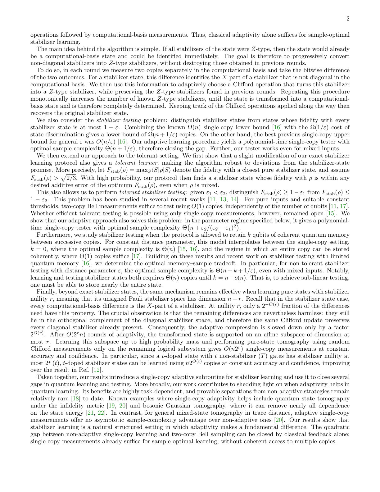
<figcaption class="paper-figure-caption"><b>Fig 1.</b> Low-resolution page preview, page 2</figcaption>
</figure>
<figure class="paper-figure-card">
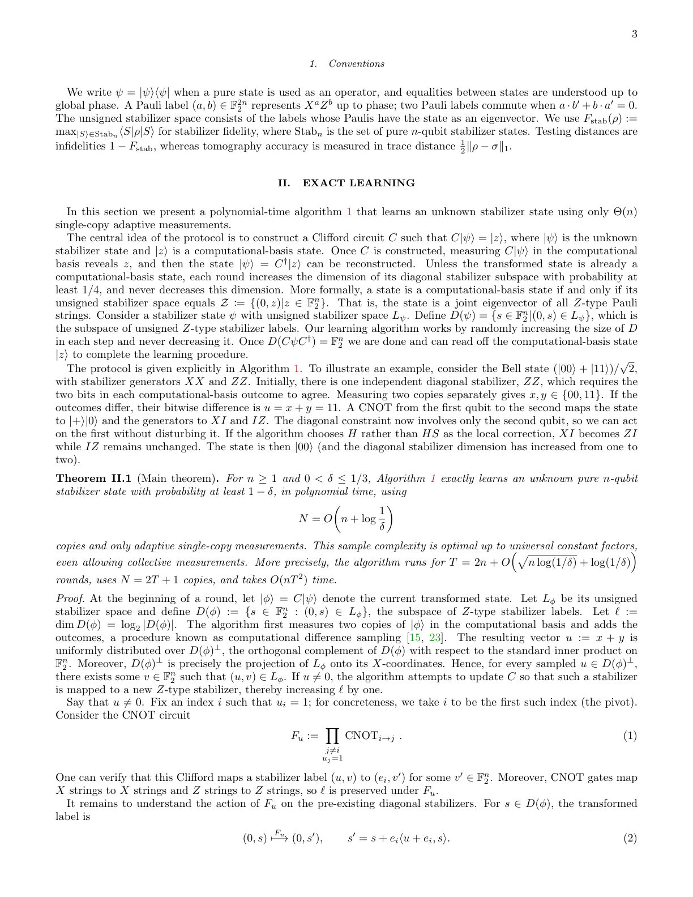
<figcaption class="paper-figure-caption"><b>Fig 2.</b> Low-resolution page preview, page 3</figcaption>
</figure>
<figure class="paper-figure-card">
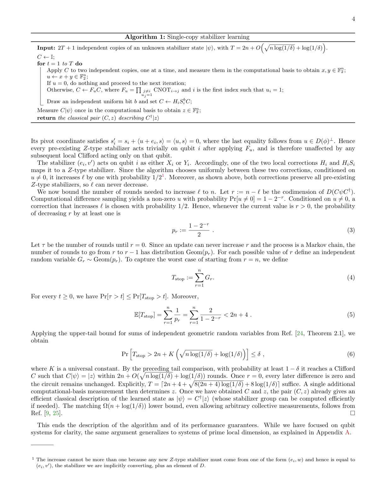
<figcaption class="paper-figure-caption"><b>Fig 3.</b> Low-resolution page preview, page 4</figcaption>
</figure>
<figure class="paper-figure-card">
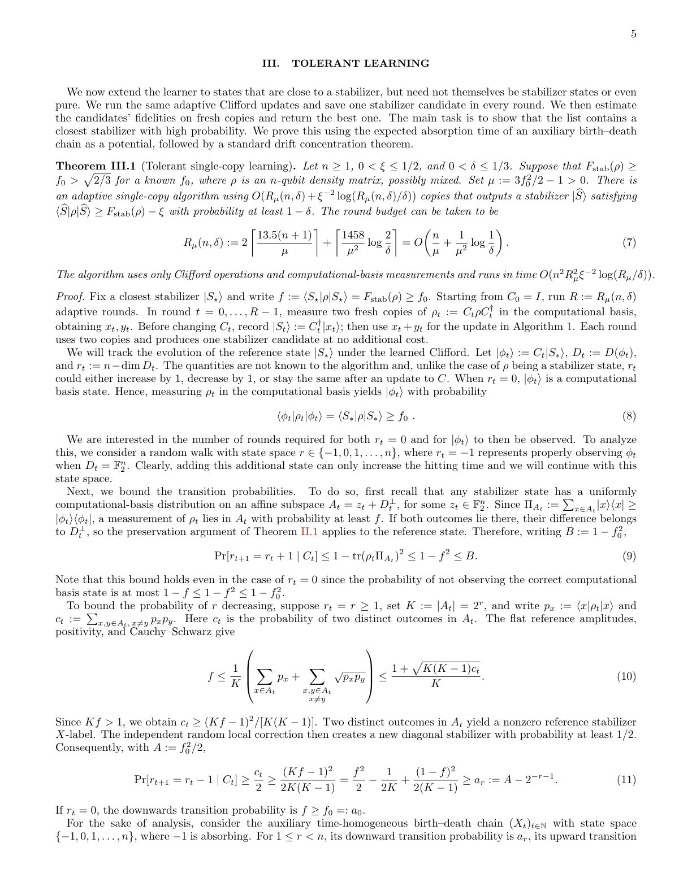
<figcaption class="paper-figure-caption"><b>Fig 4.</b> Low-resolution page preview, page 5</figcaption>
</figure>
<figure class="paper-figure-card">
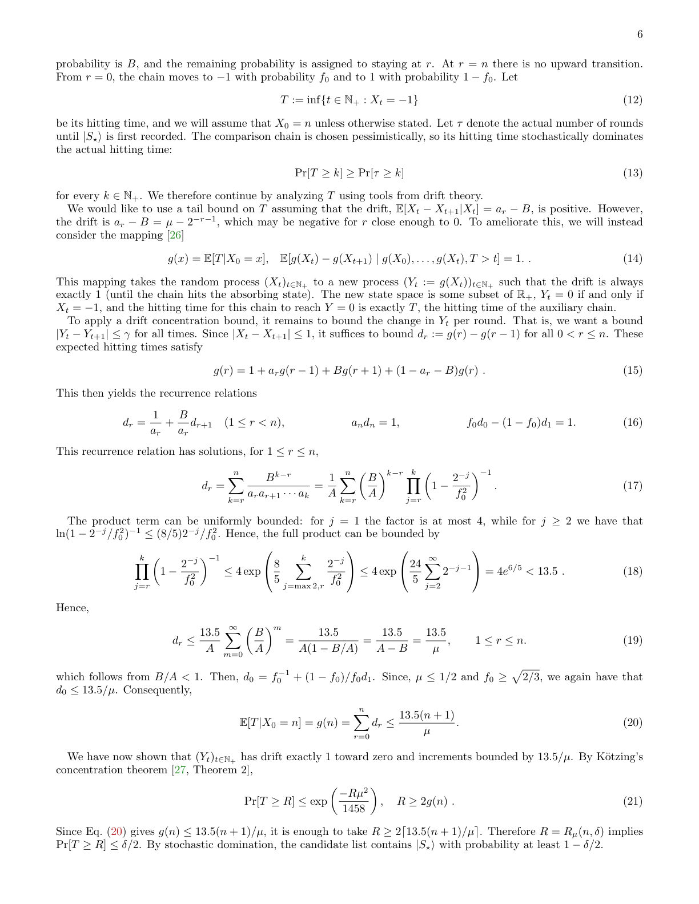
<figcaption class="paper-figure-caption"><b>Fig 5.</b> Low-resolution page preview, page 6</figcaption>
</figure>
</div>

<p><strong>Summary.</strong> This work demonstrates that by employing an adaptive measurement strategy, the sample complexity for learning unknown stabilizer states can be drastically reduced from quadratic ($\Omega(n^2)$) to linear ($\Theta(n)$). This breakthrough shows that classical feedback can bridge a major gap in quantum resource estimation, providing optimal protocols for both state learning and fidelity testing.</p>
<p><strong>Why it may be interesting.</strong> The core finding—that adaptivity removes a quadratic scaling barrier in quantum state characterization—provides a powerful general principle for designing efficient quantum measurement protocols applicable across various quantum information tasks.</p>
<details>
<summary>Detailed structure</summary>
<p><strong>Main problem.</strong> The paper addresses the resource efficiency (sample complexity) required to learn and test unknown stabilizer states using quantum measurements.</p>
<p><strong>Main result.</strong> Adaptivity in measurement choice closes a quadratic gap, allowing exact learning of $n$-qubit stabilizer states using only $\Theta(n)$ single-copy measurements, matching the optimal Bell sampling complexity.</p>
<p><strong>Method.</strong> The authors develop an adaptive algorithm that iteratively uses single-copy Clifford measurements and classical feedback to progressively determine the stabilizer generators of the unknown state.</p>
<p><strong>Model / system.</strong> The focus is on $n$-qubit (and $n$-qudit) stabilizer states, which are fundamental to quantum error correction and quantum computation. The analysis compares the required measurements for adaptive vs. non-adaptive protocols.</p>
<p><strong>Key observables.</strong> Stabilizer fidelity ($F_{	ext{stab}}$), dimension of the diagonal stabilizer subspace ($\ell$), and the required number of measurements ($N$).</p>
<p><strong>Important parameters / regimes.</strong> The number of qubits ($n$), the error tolerance ($\epsilon$), and the local dimension ($p$) are key parameters governing the complexity bounds.</p>
<p><strong>Assumptions / limitations.</strong> The analysis relies on the ability to perform adaptive measurements and assumes the state is sufficiently close to a stabilizer state for the testing protocols.</p>
<p><strong>Figures summary.</strong> Not specified in the notes, but the results establish complexity bounds for learning and testing protocols.</p>
<p><strong>Paper structure.</strong> The paper establishes the problem gap (Bell vs. non-adaptive single-copy), presents the adaptive learning algorithm for exact state recovery, extends this to tolerant state estimation, and finally determines optimal memory-sample tradeoffs.</p>
</details>
<details>
<summary>Abstract</summary>
<p>Stabilizer states are central to quantum computing, underlying quantum error correction, benchmarking, and efficient classical simulation. Yet their learnability exhibits a striking gap: an $n$-qubit stabilizer state can be learned from $Θ(n)$ copies using two-copy Bell measurements, whereas non-adaptive single-copy measurements require $Ω(n^2)$ copies. Here we show that adaptivity completely closes this gap. We give a polynomial-time adaptive algorithm that learns an arbitrary $n$-qubit stabilizer state from $Θ(n)$ single-copy Clifford measurements, matching the optimal sample complexity of Bell sampling without any multi-copy measurements. The same ideas yield a sample-optimal single-copy tolerant tester and, with $k$ qubits of quantum memory, the optimal testing tradeoff $Θ(n-k+1/\varepsilon)$ at infidelity $\varepsilon$. Finally, we show that this adaptive mechanism extends beyond exact stabilizer states: states of stabilizer nullity at most $r$, including states prepared by Clifford circuits with a bounded number of $T$ gates, can be learned using $O(n2^{r})$ single-copy measurements.</p>
</details>
<p><sub><a href="#top">↑ back to top</a></sub></p>

<p><a id="paper-2610.00474"></a></p>
<h3 id="algebraic-relaxation-of-strong-to-weak-symmetry-breaking-order-via-charge-sector-broadening"><a href="http://arxiv.org/abs/2610.00474v1">Algebraic Relaxation of Strong-to-Weak Symmetry-Breaking Order via Charge-Sector Broadening</a></h3>
<p><strong>Authors:</strong> Zi-Xi Fang, Kai Zhang<br>
<strong>Type:</strong> theory · <strong>Category:</strong> statistical mechanics · <strong>PDF:</strong> <a href="https://arxiv.org/pdf/2610.00474v1">https://arxiv.org/pdf/2610.00474v1</a><br>
<strong>Analysis basis:</strong> full PDF text, analyzed in chunks
<strong>Topic relevance:</strong> <code>Keldysh / 2PI / non-Gaussian methods</code> <strong>3/5</strong> · <code>correlated / nonlocal dissipation</code> <strong>3/5</strong> · <code>driven-dissipative phase transition</code> <strong>3/5</strong> · <code>methods for driven-dissipative</code> <strong>3/5</strong> · <code>non-equilibrium universality</code> <strong>3/5</strong> · <code>analog quantum simulation</code> <strong>2/5</strong> · <code>quantum measurements</code> <strong>2/5</strong> · <code>scars &amp; prethermalization</code> <strong>2/5</strong></p>
<div class="figure-strip-hint">↔ Scroll figures horizontally</div>
<div class="paper-figures-scroll">
<figure class="paper-figure-card">
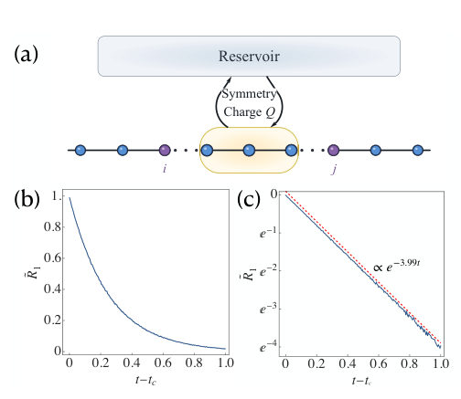
<figcaption class="paper-figure-caption"><b>Fig 1.</b> FIG. 1. (a) Illustration of local strong-symmetry breaking on a finite lattice region. (b) Exponential decay of the long-range connected R´enyi-1 correlator under the local symmetry-breaking perturbation in Eq. (4), with a semilogarithmic plot shown in (c). The unperturbed strongly Z2-symmetric Liouvillian is L0[ρ] = γx PL i=1 D[Xi]ρ + γz PL−1 i=1 D[ZiZi+1]ρ + γ4 PL−3 i=1 D[ZiZi+1Zi+2Zi+3]ρ, where D[O]ρ = OρO† −1</figcaption>
</figure>
<figure class="paper-figure-card">
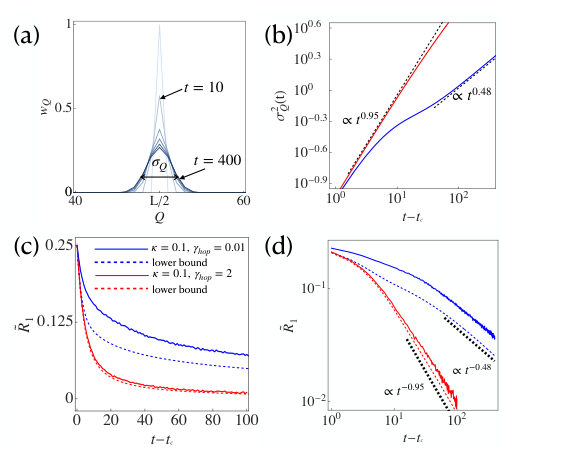
<figcaption class="paper-figure-caption"><b>Fig 2.</b> FIG. 2. Charge-space broadening and R´enyi-1 algebraic relax- ation under local U(1) charge exchange. Numerical results for a spinless-fermion chain in Eq. (16) with L = 100 and z = 2, initial- ized in ¯PL/2. A balanced leakage channel with κ+ = κ−= κ = 0.1 acts at x = L/2, with γϕ = 5. Blue and red denote γhop = 0.01 and 2, respectively. (a) Broadening of the charge-sector distribution wQ(t) for γhop = 0.01, with width σQ. (b) Charge variance on log- arithmic scales; black dashed lines indicate σ2 Q ∝(t −tc)0.48 (blue) and (t −tc)0.95 (red). (c) Connected R´enyi-1 correlator eR1(ρ, c† i cj) for i = L/4 and j = 3L/4. Solid curves are numerical results, while colored dashed curves are the...</figcaption>
</figure>
<figure class="paper-figure-card">
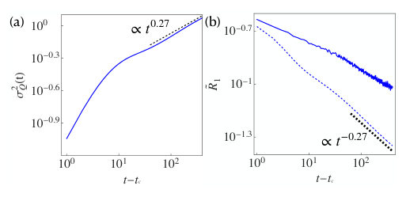
<figcaption class="paper-figure-caption"><b>Fig 3.</b> FIG. 3. Numerical results for the dipole-conserving model in Eq. (16) with L = 50, γhop = 0.01, γϕ = 5, and κ+ = κ−= κ = 0.1, initialized in ¯PL/2. (a) Charge variance σ2 Q(t) ∝(t −tc)0.27, close to the predicted exponent 1/z = 1/4. (b) Log-log plot of the connected R´enyi-1 correlator for i = L/4 and j = 3L/4. The solid curve is the numerical result, while the blue dashed curve is the auxiliary-state prediction computed from the same wQ(t). Black dashed lines indi- cate the algebraic behaviors (t −tc)0.27 and (t −tc)−0.27 in (a) and (b), respectively.</figcaption>
</figure>
</div>

<p><strong>Summary.</strong> This theoretical paper analyzes the decay of order associated with Strong-to-Weak Spontaneous Symmetry Breaking (SW-SSB) in open quantum systems. It distinguishes between discrete ($Z_2$) and continuous ($U(1)$) symmetries, finding that discrete order decays exponentially while continuous order relaxes algebraically. The methodology involves using connected Rényi correlators and analyzing charge-sector dynamics to derive universal scaling laws.</p>
<p><strong>Why it may be interesting.</strong> This work provides deep insights into how information-theoretic order (like SSB) persists or decays in realistic, dissipative quantum environments, which is crucial for understanding quantum coherence and thermalization.</p>
<details>
<summary>Detailed structure</summary>
<p><strong>Main problem.</strong> The paper investigates how the long-range order associated with Strong-to-Weak Spontaneous Symmetry Breaking (SW-SSB) decays when the strong symmetry is explicitly broken by coupling to an environment.</p>
<p><strong>Main result.</strong> The decay rate depends on the symmetry: discrete $Z_2$ symmetry shows exponential decay, while continuous $U(1)$ symmetry exhibits a parametrically slower algebraic relaxation with a universal two-stage scaling law.</p>
<p><strong>Method.</strong> The analysis uses the connected Rényi-$k$ correlator ($ ilde{R}_k$) and compares the full mixed state to an auxiliary state derived from charge-sector weights to establish rigorous lower bounds on the decay.</p>
<p><strong>Model / system.</strong> The study considers open quantum systems governed by Liouvillian dynamics, specifically examining fermionic chains with local charge exchange coupling to a reservoir. Symmetries analyzed include discrete $\mathbb{Z}_2$ and continuous $U(1)$.</p>
<p><strong>Key observables.</strong> Connected Rényi-1 correlator ($    ilde{R}_1$), connected Rényi-2 correlator ($    ilde{R}_2$), and the charge variance ($\sigma_Q^2$).</p>
<p><strong>Important parameters / regimes.</strong> The hydrodynamic exponent $z$, the coupling strength $\kappa$, and the time evolution $t$.</p>
<p><strong>Assumptions / limitations.</strong> The analysis relies on establishing lower bounds by comparing the true correlator to an auxiliary state, often assuming Gaussian distributions for charge fluctuations in the thermodynamic limit.</p>
<p><strong>Figures summary.</strong> Figures illustrate the exponential decay for $Z_2$ symmetry and the algebraic relaxation for $U(1)$ symmetry, showing the two-stage scaling $   ilde{R}_1 \sim t^{-1}$ followed by $    ilde{R}_1 \sim t^{-1/z}$.</p>
<p><strong>Paper structure.</strong> The paper first analyzes the $Z_2$ case showing exponential decay. It then focuses on the $U(1)$ case, deriving lower bounds for $  ilde{R}_k$ by analyzing the charge-sector dynamics, leading to the identification of the two-stage algebraic scaling law.</p>
</details>
<details>
<summary>Abstract</summary>
<p>Strong-to-weak spontaneous symmetry breaking (SW-SSB) is a distinctive phenomenon of mixed quantum states, characterized by nonlinear long-range order associated with strong symmetry. In realistic open quantum systems, however, strong symmetry is macroscopically fragile and can be explicitly reduced to weak symmetry through local charge exchange with the environment. In this paper, we investigate how the SW-SSB order decays under such strong-symmetry-breaking Liouvillian dynamics. For discrete $\mathbb{Z}_2$ symmetry, a local symmetry-breaking perturbation drives an exponential decay of the Rényi-1 long-range correlator, revealing the fragility of discrete SW-SSB order. By contrast, for continuous $U(1)$ symmetry, local charge exchange broadens the distribution over symmetry-charge sectors and leads to parametrically slower algebraic relaxation. We establish a rigorous algebraic lower bound on the connected Rényi-1 long-range correlation, demonstrating the robustness of this slow relaxation. In the thermodynamic limit, we further uncover a two-stage dynamical scaling: $\tilde{R}_1\sim t^{-1}$ at early times and $\tilde{R}_1\sim t^{-1/z}$ at long times, with $z$ set by the underlying hydrodynamic dynamics. As a numerical verification, we consider fermionic chains with $z=2$ and $z=4$, which are excellent agreement with the theoretical predictions.</p>
</details>
<p><sub><a href="#top">↑ back to top</a></sub></p>

<p><a id="paper-2610.01932"></a></p>
<h3 id="avoiding-exponentially-large-groups-with-open-quantum-system-technology"><a href="http://arxiv.org/abs/2610.01932v1">Avoiding Exponentially Large Groups with Open Quantum System Technology</a></h3>
<p><strong>Authors:</strong> Jihong Cai, Advith Govindarajan, Marius Junge<br>
<strong>Type:</strong> theory · <strong>Category:</strong> quantum information and computing · <strong>PDF:</strong> <a href="https://arxiv.org/pdf/2610.01932v1">https://arxiv.org/pdf/2610.01932v1</a><br>
<strong>Analysis basis:</strong> full PDF text, analyzed in chunks
<strong>Topic relevance:</strong> <code>correlated / nonlocal dissipation</code> <strong>3/5</strong> · <code>driven-dissipative phase transition</code> <strong>3/5</strong> · <code>methods for driven-dissipative</code> <strong>3/5</strong> · <code>analog quantum simulation</code> <strong>2/5</strong> · <code>non-equilibrium universality</code> <strong>2/5</strong> · <code>quantum measurements</code> <strong>2/5</strong> · <code>Keldysh / 2PI / non-Gaussian methods</code> <strong>1/5</strong></p>
<div class="figure-strip-hint">↔ Scroll figures horizontally</div>
<div class="paper-figures-scroll">
<figure class="paper-figure-card">
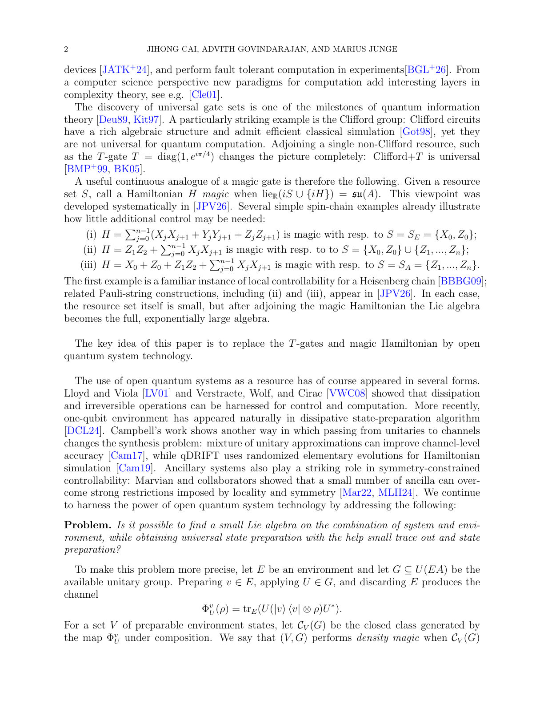
<figcaption class="paper-figure-caption"><b>Fig 1.</b> Low-resolution page preview, page 2</figcaption>
</figure>
<figure class="paper-figure-card">
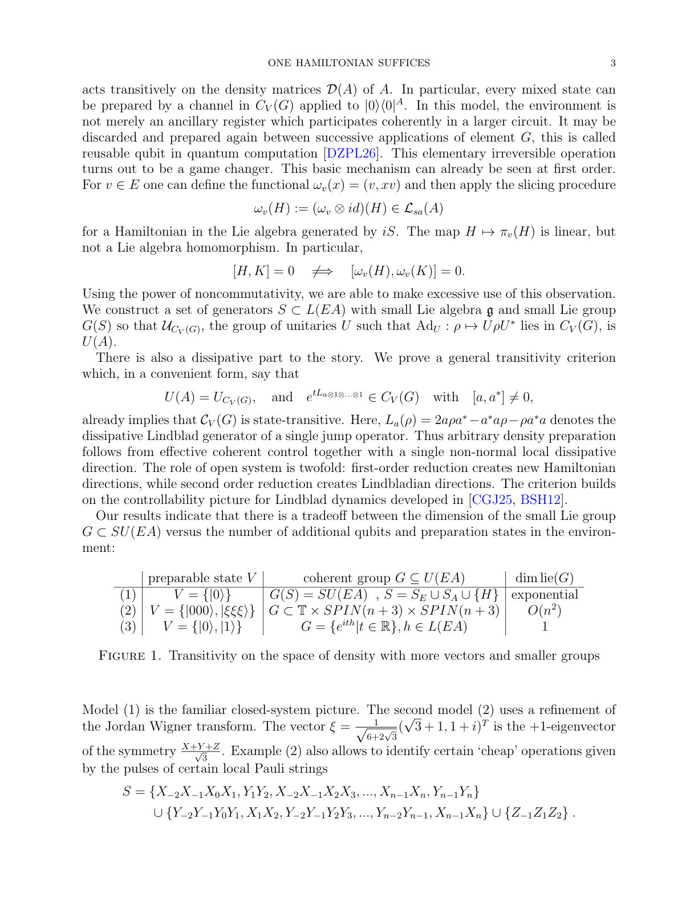
<figcaption class="paper-figure-caption"><b>Fig 2.</b> Low-resolution page preview, page 3</figcaption>
</figure>
<figure class="paper-figure-card">
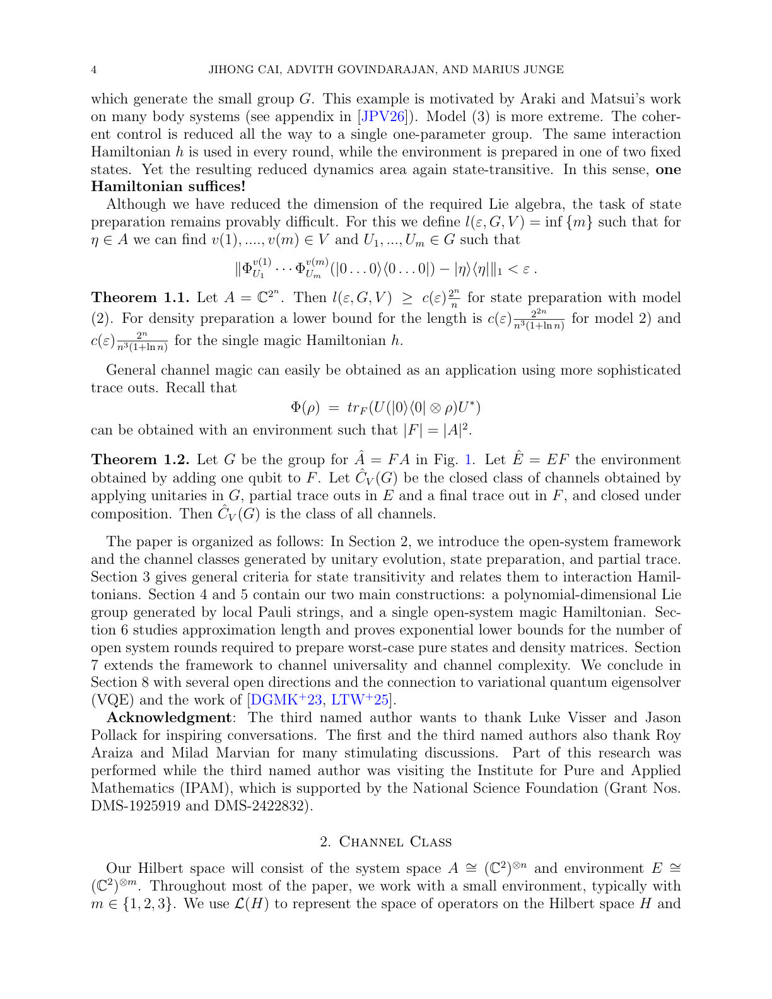
<figcaption class="paper-figure-caption"><b>Fig 3.</b> Low-resolution page preview, page 4</figcaption>
</figure>
<figure class="paper-figure-card">
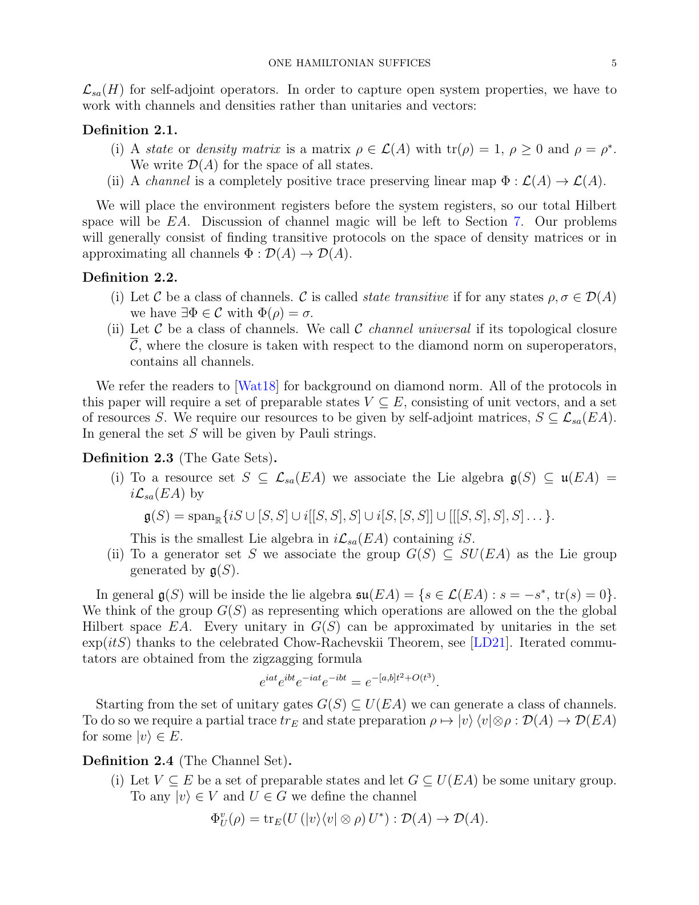
<figcaption class="paper-figure-caption"><b>Fig 4.</b> Low-resolution page preview, page 5</figcaption>
</figure>
<figure class="paper-figure-card">
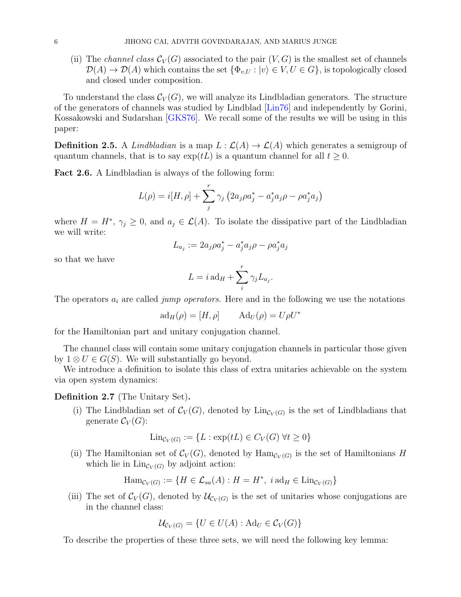
<figcaption class="paper-figure-caption"><b>Fig 5.</b> Low-resolution page preview, page 6</figcaption>
</figure>
</div>

<p><strong>Summary.</strong> This theoretical paper proposes a novel method to achieve universal state and channel control in open quantum systems by restricting the available operations to a small, polynomially-sized Lie group derived from local Pauli strings. By leveraging the environment and partial trace, the authors demonstrate that complex, global operations can be simulated efficiently, bypassing the need to control the entire unitary group.</p>
<p><strong>Why it may be interesting.</strong> This work provides concrete, resource-efficient pathways for quantum control, showing that structured local interactions can simulate the power of global, complex gates, which is crucial for designing practical quantum hardware protocols.</p>
<details>
<summary>Detailed structure</summary>
<p><strong>Main problem.</strong> The paper addresses the challenge of achieving universal state and channel preparation in open quantum systems without relying on the full, exponentially large unitary group.</p>
<p><strong>Main result.</strong> They show that state and channel universality can be achieved by identifying small, polynomially-sized Lie groups derived from local Pauli strings, and by utilizing the environment to extend the available operations.</p>
<p><strong>Method.</strong> The approach involves characterizing the achievable set of operations (channels) using the framework of open quantum systems, specifically by analyzing the Lie algebra generated by the available unitary and dissipative operations.</p>
<p><strong>Model / system.</strong> The system consists of a primary system A (n qubits) coupled to an environment E, whose dynamics are governed by open quantum system master equations (Lindbladians). The operations are derived from combining group operations $G$ with environment interactions $V$.</p>
<p><strong>Key observables.</strong> State density matrices $
ho$, quantum channels $\Phi$, and the approximation error $\varepsilon$ for state/channel preparation.</p>
<p><strong>Important parameters / regimes.</strong> The dimension of the generated Lie algebra, which is shown to be polynomial in $n$ rather than exponential.</p>
<p><strong>Assumptions / limitations.</strong> The analysis relies on the ability to approximate the required operations using a small, structured Lie group $G$ and an environment interaction $V$.</p>
<p><strong>Figures summary.</strong> Figure 1 illustrates a trade-off comparison between three models for state preparation complexity: closed system (exponential), using a small group $G$ (polynomial), and using a single interaction Hamiltonian.</p>
<p><strong>Paper structure.</strong> The paper develops the mathematical framework for open system operations, defines state and channel transitivity, and then proves theorems establishing that polynomial resources (small Lie groups) can achieve universality, contrasting this with the exponential complexity of the full unitary group.</p>
</details>
<details>
<summary>Abstract</summary>
<p>We propose a novel approach to state preparation by embracing the full power of open quantum systems. Instead of working with the whole unitary group in $n$ qubits, we identify a small Lie group $G$ in $(n+3)$ qubits. The dimension of its Lie algebra is $\text{poly}(n)$. Every state can be approximated starting from any fixed input state by repeatedly using partial trace and state preparation in the environment alongside group operations. Moreover, we also identify a single (open system magic) interaction Hamiltonian whose unitary group can be combined with open system quantum technology mentioned above to achieve transitivity on the space of all densities. Similarly, we show that all channels on $n$ qubits can be approximated by using a larger environment, achieving channel universality. The interesting small groups we identify are derived from Lie algebras of local Pauli strings and lead to a new landscape of cheap and expensive states, densities, and channels.</p>
</details>
<p><sub><a href="#top">↑ back to top</a></sub></p>

<p><a id="paper-2610.01112"></a></p>
<h3 id="dissipation-sensitivity-trade-off-in-dissipative-bosonic-systems"><a href="http://arxiv.org/abs/2610.01112v1">Dissipation-Sensitivity Trade-Off in Dissipative Bosonic Systems</a></h3>
<p><strong>Authors:</strong> Kohei Yoshimura, Ryusuke Hamazaki<br>
<strong>Type:</strong> theory · <strong>Category:</strong> statistical mechanics · <strong>PDF:</strong> <a href="https://arxiv.org/pdf/2610.01112v1">https://arxiv.org/pdf/2610.01112v1</a><br>
<strong>Analysis basis:</strong> full PDF text, analyzed in chunks
<strong>Topic relevance:</strong> <code>driven-dissipative phase transition</code> <strong>3/5</strong> · <code>methods for driven-dissipative</code> <strong>3/5</strong> · <code>non-equilibrium universality</code> <strong>3/5</strong> · <code>Keldysh / 2PI / non-Gaussian methods</code> <strong>2/5</strong> · <code>quantum measurements</code> <strong>2/5</strong> · <code>analog quantum simulation</code> <strong>1/5</strong> · <code>correlated / nonlocal dissipation</code> <strong>1/5</strong></p>
<div class="figure-strip-hint">↔ Scroll figures horizontally</div>
<div class="paper-figures-scroll">
<figure class="paper-figure-card">
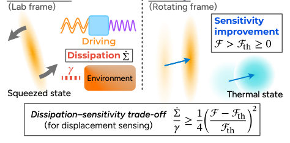
<figcaption class="paper-figure-caption"><b>Fig 1.</b> Figure 1. We consider a single-mode bosonic system kept out of equilibrium to possess higher estimation performance. We derive a trade-off between the dissipation required to maintain the sensi- tive state and the increase in its sensitivity over a thermal state. For displacement sensing, the entropy production rate is bounded quadrat- ically by the quantum Fisher information gain, while linear bounds are obtained for rotation and squeezing sensing.</figcaption>
</figure>
<figure class="paper-figure-card">
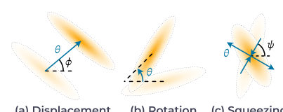
<figcaption class="paper-figure-caption"><b>Fig 2.</b> Figure 2. We focus on three sensing protocols in the phase space: (a) displacement in angle ϕ, (b) rotation about the origin, and (c) squeezing in angle ψ. Note that while θ is the estimated parameter, ϕ and ψ are fixed parameters that designate the operation.</figcaption>
</figure>
<figure class="paper-figure-card">
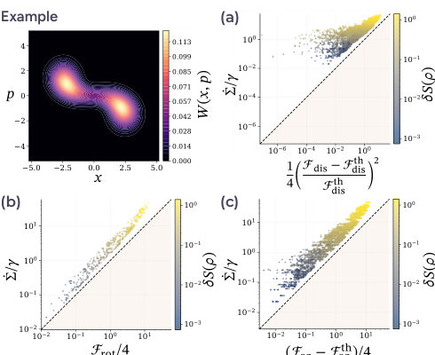
<figcaption class="paper-figure-caption"><b>Fig 3.</b> Figure 4. Numerical verification of the dissipation–sensitivity trade- offs for non-Gaussian states (details found in [61]). In the top left, the Wigner function of a typical steady state with two peaks is shown. Panels (a), (b), and (c) correspond to displacement, rotation, and squeezing bounds. No violation was observed. The dots are colored by the non-Gaussianity measured by the von Neumann entropy de- crease from the corresponding Gaussian state with the same mean and covariance as the steady state. Unlike the Gaussian simulation, we randomly sample Hamiltonian parameters G and K (in addition to ¯n) rather than r and V. In (a) and (c), we randomly choose eight angles for both ϕ and ψ,...</figcaption>
</figure>
<figure class="paper-figure-card">
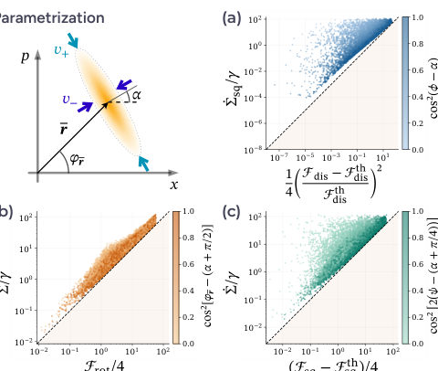
<figcaption class="paper-figure-caption"><b>Fig 4.</b> Figure 3. Numerical verification of inequalities (7). In the top left, we show the parametrization of steady states. We plot the EPR and the QFI bounds at randomly generated 8000 steady states for (a) displacement, (b) rotation, and (c) squeezing. No violation was observed. The dots are colored based on the similarity between (a) squeezed angle α and displacement angle ϕ, (b) anti-squeezed angle α + π/2 and r’s direction, and (c) a middle angle α + π/4 and squeezing angle ψ (up to a π/2 difference). When the two angles are close, the inequality becomes tight. For more details, including the choice of sampling parameters, see the SM [61].</figcaption>
</figure>
</div>

<p><strong>Summary.</strong> This paper establishes a universal thermodynamic trade-off principle for quantum sensing in bosonic systems. It rigorously derives a lower bound connecting the required steady-state entropy production rate to the achievable quantum sensitivity, quantified by the Quantum Fisher Information. This connects non-equilibrium thermodynamics directly to the limits of quantum measurement.</p>
<p><strong>Why it may be interesting.</strong> This work provides a quantitative thermodynamic constraint on quantum metrology, linking the irreversible processes (dissipation) inherent in open quantum systems directly to their ultimate measurement precision limits.</p>
<details>
<summary>Detailed structure</summary>
<p><strong>Main problem.</strong> The paper investigates the fundamental trade-off between the dissipation required to maintain a quantum state and the resulting sensitivity gain for quantum estimation in bosonic systems.</p>
<p><strong>Main result.</strong> A universal trade-off inequality is rigorously derived, bounding the steady-state entropy production rate in terms of the achievable Quantum Fisher Information gain relative to the thermal state.</p>
<p><strong>Method.</strong> The analysis involves deriving and solving the Lindblad equation for bosonic systems, calculating the steady-state entropy production rate, and applying the Quantum Fisher Information formalism for various sensing tasks.</p>
<p><strong>Model / system.</strong> The system is a single-mode or N-mode bosonic system described by annihilation and creation operators, evolving under a Lindblad master equation. The analysis covers both quadratic (Gaussian) and non-Gaussian (Kerr nonlinearity) Hamiltonians.</p>
<p><strong>Key observables.</strong> Entropy Production Rate ($\dot{\Sigma}$), Quantum Fisher Information (QFI) for displacement, rotation, and squeezing sensing ($F_{	ext{dis}}, F_{	ext{rot}}, F_{	ext{sq}}$).</p>
<p><strong>Important parameters / regimes.</strong> Thermal environment temperature (implied by $eta$), dissipation rate ($\gamma$), and the degree of nonlinearity (Kerr coupling $K$).</p>
<p><strong>Assumptions / limitations.</strong> The initial rigorous derivation is established for Gaussian steady states, although the bounds are shown to hold numerically beyond this regime.</p>
<p><strong>Figures summary.</strong> Figures illustrate the trade-off relationship between dissipation and sensitivity for different sensing protocols (displacement, rotation, squeezing) in phase space, and numerically verify the derived inequalities for both Gaussian and non-Gaussian states.</p>
<p><strong>Paper structure.</strong> The paper develops the theory by first establishing the dynamics and observables for bosonic systems, deriving the core trade-off relation connecting $\dot{\Sigma}$ and QFI, and then numerically verifying this bound across various sensing tasks and nonlinearity regimes.</p>
</details>
<details>
<summary>Abstract</summary>
<p>We discover a universal trade-off between the dissipation required to maintain a quantum state more sensitive than a thermal one and the sensitivity gain for a driven single-mode bosonic system under a thermal environment. Specifically, for Gaussian states, we rigorously derive a lower bound on the entropy production rate in the steady state in terms of the quantum Fisher information gain relative to a thermal reference state. Numerical investigations of Kerr nonlinearities further support that these bounds can hold beyond the Gaussian regime. Our results establish a new connection between steady-state thermodynamics and quantum metrological performance.</p>
</details>
<p><sub><a href="#top">↑ back to top</a></sub></p>

<p><a id="paper-2610.00603"></a></p>
<h3 id="late-time-power-laws-in-fluorescence-decays-quantum-decay-or-alternative-mechanisms"><a href="http://arxiv.org/abs/2610.00603v1">Late-Time Power Laws in Fluorescence Decays: Quantum Decay or Alternative Mechanisms?</a></h3>
<p><strong>Authors:</strong> Francesco Giacosa, Anna Kolbus, Krzysztof Kyziol, Magdalena Plodowska, Milena Piotrowska, Karol Szary, Arthur Vereijken<br>
<strong>Type:</strong> both · <strong>Category:</strong> other · <strong>PDF:</strong> <a href="https://arxiv.org/pdf/2610.00603v1">https://arxiv.org/pdf/2610.00603v1</a><br>
<strong>Analysis basis:</strong> full PDF text, analyzed in chunks
<strong>Topic relevance:</strong> <code>correlated / nonlocal dissipation</code> <strong>3/5</strong> · <code>quantum optics experiment</code> <strong>3/5</strong> · <code>driven-dissipative phase transition</code> <strong>2/5</strong> · <code>methods for driven-dissipative</code> <strong>2/5</strong> · <code>Keldysh / 2PI / non-Gaussian methods</code> <strong>1/5</strong> · <code>analog quantum simulation</code> <strong>1/5</strong> · <code>non-equilibrium universality</code> <strong>1/5</strong> · <code>quantum measurements</code> <strong>1/5</strong> · <code>scars &amp; prethermalization</code> <strong>1/5</strong></p>
<div class="figure-strip-hint">↔ Scroll figures horizontally</div>
<div class="paper-figures-scroll">
<figure class="paper-figure-card">
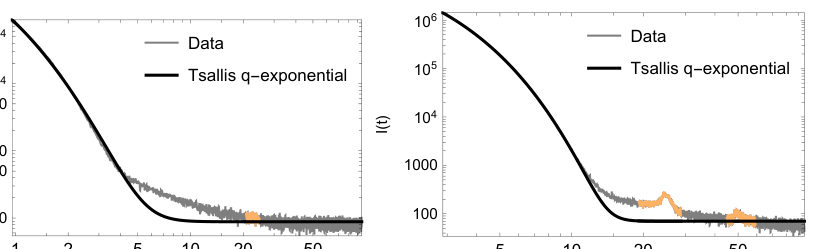
<figcaption class="paper-figure-caption"><b>Fig 1.</b> Figure 1: Results of the fits using the Tsallis-statistics model. Non-fitted data are marked in orange, see Ref. [17] – this is due to effects related to time-to-digital converter and its internal reference clock leading to periodic structures with the period of 25 ns.</figcaption>
</figure>
<figure class="paper-figure-card">
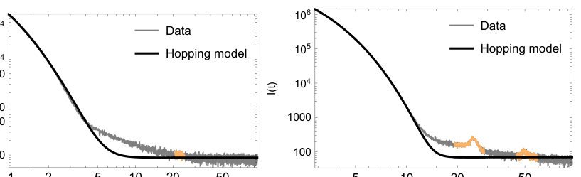
<figcaption class="paper-figure-caption"><b>Fig 2.</b> Figure 2: Results of the fits using the energy-migration model. Non-fitted data are marked in orange – this is due to effects related to time-to-digital converter and its internal reference clock leading to periodic structures with the period of 25 ns.</figcaption>
</figure>
</div>

<p><strong>Summary.</strong> This paper examines the origin of late-time power-law tails in fluorescence decay, comparing predictions from quantum mechanics against alternative models like nonextensive statistics and energy migration. Using time-resolved spectroscopy data, the authors argue that the experimental features do not align perfectly with the predictions of these alternative models, lending support to a specific interpretation of the quantum decay process.</p>
<p><strong>Why it may be interesting.</strong> This work directly addresses the interpretation of non-exponential decay in open quantum systems, a core topic in AMO physics and quantum optics, by rigorously testing competing physical models against real experimental data.</p>
<details>
<summary>Detailed structure</summary>
<p><strong>Main problem.</strong> The paper investigates the origin of late-time power-law decays observed in fluorescence decay curves, determining if they arise from fundamental quantum mechanical predictions or from alternative physical mechanisms.</p>
<p><strong>Main result.</strong> The analysis suggests that the specific features expected from the quantum-mechanical description, such as a sharp transition from exponential to power-law decay, cannot be reproduced by the alternative statistical or energy-migration parametrizations fitted to the experimental data.</p>
<p><strong>Method.</strong> The authors compare time-resolved fluorescence spectroscopy data from fluorophores (erythrosine B and eosine Y) against predictions from quantum decay theory, nonextensive Tsallis statistics, and energy-migration models.</p>
<p><strong>Model / system.</strong> The study uses time-resolved fluorescence spectroscopy on molecular fluorophores. Theoretical models include standard quantum mechanical decay, Tsallis q-exponential relaxation, and energy-migration rate equations.</p>
<p><strong>Key observables.</strong> The primary observables are the fluorescence intensity decay $I(t)$ and the power-law exponent ($eta$) observed at late times.</p>
<p><strong>Important parameters / regimes.</strong> Key parameters include the Tsallis nonextensivity index ($q$), the energy-migration rate parameters ($\gamma, 	au_2$), and the decay time constants ($  au$).</p>
<p><strong>Assumptions / limitations.</strong> The analysis assumes that the observed power-law decay must be explained by one of the tested theoretical frameworks, though the authors note that the ill-conditioned nature of the inverse problem limits uniqueness.</p>
<p><strong>Figures summary.</strong> Figures illustrate the successful fitting of experimental data for Erythrosine B and Eosine Y using the Tsallis-statistics model and the energy-migration model, while contrasting these fits with predictions from the delayed fluorescence model.</p>
<p><strong>Paper structure.</strong> The paper establishes the theoretical context of power-law decay in quantum systems, presents the experimental data from fluorescence spectroscopy, and then systematically confronts the QM predictions against alternative models (Tsallis, energy-migration) using fitting procedures.</p>
</details>
<details>
<summary>Abstract</summary>
<p>In quantum mechanics, the properties of an unstable system are closely related to its corresponding energy distribution. One of the predictions of the theory is the emergence of a late-time power law in the survival probability $P(t)$ of the unstable state. However, in complex systems, similar effects may emerge due to other phenomena. This is the case for nonextensive statistical models, for some continuous lifetime distribution models, and also for certain energy-migration models applied to fluorescence. In this work, these alternative interpretations are confronted with data from time-resolved fluorescence spectroscopy experiments with erythrosine B and eosine Y as fluorophores. It turns out that some of the features expected within the quantum-mechanical description, such as the sharp transition from the exponential to the power-law regime, cannot be reproduced by the specific statistical and energy-migration parametrizations fitted in the analysis.</p>
</details>
<p><sub><a href="#top">↑ back to top</a></sub></p>

<p><a id="paper-2610.01252"></a></p>
<h3 id="correlation-imaging-via-hybrid-entanglement-between-microwave-photons-and-surface-acoustic-wave-phonons"><a href="http://arxiv.org/abs/2610.01252v1">Correlation Imaging via Hybrid Entanglement between Microwave Photons and Surface Acoustic Wave Phonons</a></h3>
<p><strong>Authors:</strong> Yu-Yuan Chen, Ling-An Wu, Yu-xi Liu<br>
<strong>Type:</strong> both · <strong>Category:</strong> other · <strong>PDF:</strong> <a href="https://arxiv.org/pdf/2610.01252v1">https://arxiv.org/pdf/2610.01252v1</a><br>
<strong>Analysis basis:</strong> full PDF text, analyzed in chunks
<strong>Topic relevance:</strong> <code>quantum optics experiment</code> <strong>3/5</strong> · <code>QC/QI experiment</code> <strong>2/5</strong> · <code>analog quantum simulation</code> <strong>2/5</strong> · <code>quantum measurements</code> <strong>2/5</strong> · <code>Full counting statistics</code> <strong>1/5</strong> · <code>correlated / nonlocal dissipation</code> <strong>1/5</strong> · <code>driven-dissipative phase transition</code> <strong>1/5</strong> · <code>interference shaping light</code> <strong>1/5</strong> · <code>methods for driven-dissipative</code> <strong>1/5</strong></p>
<div class="figure-strip-hint">↔ Scroll figures horizontally</div>
<div class="paper-figures-scroll">
<figure class="paper-figure-card">
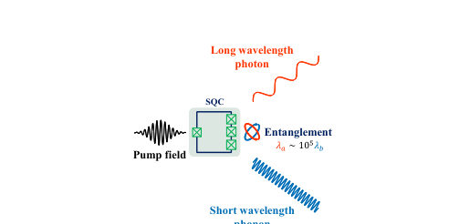
<figcaption class="paper-figure-caption"><b>Fig 1.</b> FIG. 1. Conceptual schematic of correlation imaging via hy- brid photon-phonon entanglement. A SQC, driven by a pump field, generates pairs of entangled photons and phonons at comparable frequencies with a wavelength disparity.</figcaption>
</figure>
<figure class="paper-figure-card">
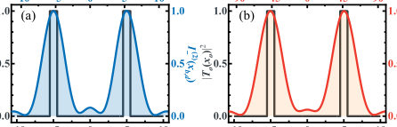
<figcaption class="paper-figure-caption"><b>Fig 2.</b> FIG. 2. Cross-scale correlation images for: (a) the de- magnification modality, and (b) the magnification modal- ity. Blue and orange curves denote the normalized correla- tions I(2) −(xb,d) and I(2) + (xa,d), respectively, while gray curves represent the object transmission |To(xo)|2.</figcaption>
</figure>
<figure class="paper-figure-card">
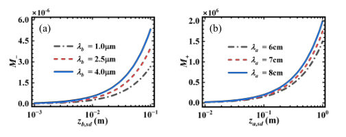
<figcaption class="paper-figure-caption"><b>Fig 3.</b> FIG. 3. (a) Demagnification factor vs. longitudinal propa- gation distance zb,sd for different phononic wavelengths λb. (b) Magnification factor vs. longitudinal propagation distance za,sd for different photonic wavelengths λa. Other parameters are the same as in Fig. 2.</figcaption>
</figure>
<figure class="paper-figure-card">
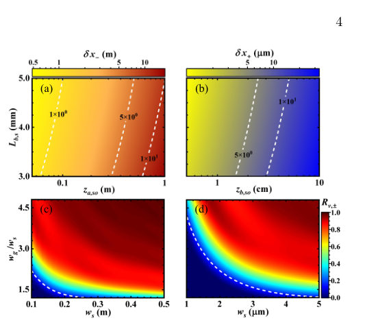
<figcaption class="paper-figure-caption"><b>Fig 4.</b> FIG. 4. (a) Resolution of demagnification modal- ity vs. phononic source aperture Lb,s and photonic propa- gation distance za,so. (b) Resolution of magnification modal- ity vs. phononic source aperture Lb,s and phononic propa- gation distance zb,so. (c) and (d): Imaging visibility vs. slit width ws and slit-distance wg, corresponding to demagnifica- tion and magnification modalities in (a) and (b), respectively. The white dashed line marks Rv,± ≃0.15, below which the correlation function signal becomes insufficient for reliable re- construction of the object’s spatial profile [49]. Other param- eters are the same as in Fig. 2.</figcaption>
</figure>
</div>

<p><strong>Summary.</strong> This paper presents a correlation imaging technique using hybrid entanglement between microwave photons and surface acoustic wave phonons. By exploiting the massive wavelength mismatch between these two fields, the method achieves unprecedented cross-scale sensing capabilities. This allows researchers to image macroscopic objects onto tiny chips, and vice versa, opening a general framework for multi-physics quantum sensing.</p>
<p><strong>Why it may be interesting.</strong> This work is highly relevant to open quantum systems and quantum optics, demonstrating a novel method to engineer quantum correlations across vastly different physical platforms (microwave/acoustic/optical) for sensing applications.</p>
<details>
<summary>Detailed structure</summary>
<p><strong>Main problem.</strong> The core problem is establishing effective spatial correlations between distinct quantum fields (photons and phonons) for multi-physics quantum sensing, overcoming the limitation where the optimal probing field differs from the readout field.</p>
<p><strong>Main result.</strong> The authors propose a correlation imaging approach that enables two highly scalable modalities: demagnifying macroscopic object profiles onto microscopic phononic chips, and magnifying microscopic profiles onto macroscopic photonic readout devices.</p>
<p><strong>Method.</strong> The imaging is achieved by measuring two-photon/two-phonon coincidence correlation functions, G^(2), derived from the hybrid entanglement between microwave photons and surface acoustic wave phonons.</p>
<p><strong>Model / system.</strong> The system utilizes hybrid entanglement generated between microwave photons and surface acoustic wave (SAW) phonons via a superconducting quantum circuit. The unique resource stems from the five order-of-magnitude wavelength disparity between these two quantum fields.</p>
<p><strong>Key observables.</strong> The correlation function G^(2)(x_a, d; x_b, d) is the key observable, used to reconstruct the object's spatial profile via integration.</p>
<p><strong>Important parameters / regimes.</strong> The scaling factors are extreme: $10^{-8} - 10^{-6}$-fold demagnification and $10^4 - 10^6$-fold magnification. Performance depends on coupling constants, propagation distances, and source apertures.</p>
<p><strong>Assumptions / limitations.</strong> Key assumptions include the weak pump approximation and the quasi-monochromatic approximation for the fields.</p>
<p><strong>Figures summary.</strong> Figure 2 simulates cross-scale correlation images for both demagnification and magnification modalities, comparing normalized correlations to the object transmission profile. Other figures detail the dependence of scaling factors and resolution on physical parameters.</p>
<p><strong>Paper structure.</strong> The paper introduces the problem, details the physical platform (photon-phonon entanglement), derives the correlation imaging formulas for both demagnification and magnification, and discusses the resulting cross-scale sensing capabilities.</p>
</details>
<details>
<summary>Abstract</summary>
<p>Establishing effective spatial correlations between distinct quantum fields is essential for multi-physics quantum sensing.~We here propose a correlation imaging approach based on the hybrid entanglement between microwave photons and microwave surface acoustic wave phonons generated via a superconducting quantum circuit.~At matched microwave frequencies, the five order-of-magnitude wavelength disparity between photons and phonons leads to a unique quantum entanglement resource, which allows the optimal field for probing an object to be distinct from that used for readout.~This resource enables two imaging modalities with giant spatial scaling: a $10^{-8}-10^{-6}$-fold demagnification of macroscopic object profiles onto microscopic phononic chips, and conversely, a $10^{4}-10^{6}$-fold magnification of microscopic object profiles into macroscopic photonic readout devices. By interfacing free-space long-wavelength microwaves with on-chip short-wavelength surface acoustic waves, our correlation imaging approach provides a general framework for cross-scale quantum sensing.</p>
</details>
<p><sub><a href="#top">↑ back to top</a></sub></p>

<p><a id="paper-2610.00537"></a></p>
<h3 id="quantum-krylov-learning"><a href="http://arxiv.org/abs/2610.00537v1">Quantum Krylov Learning</a></h3>
<p><strong>Authors:</strong> Shunji Matsuura, Yoji Kawamura, Joseph Salfi, Satoshi Iso<br>
<strong>Type:</strong> theory · <strong>Category:</strong> other · <strong>PDF:</strong> <a href="https://arxiv.org/pdf/2610.00537v1">https://arxiv.org/pdf/2610.00537v1</a><br>
<strong>Analysis basis:</strong> full PDF text, analyzed in chunks
<strong>Topic relevance:</strong> <code>methods for driven-dissipative</code> <strong>3/5</strong> · <code>quantum measurements</code> <strong>3/5</strong> · <code>Keldysh / 2PI / non-Gaussian methods</code> <strong>2/5</strong> · <code>analog quantum simulation</code> <strong>2/5</strong> · <code>driven-dissipative phase transition</code> <strong>2/5</strong> · <code>correlated / nonlocal dissipation</code> <strong>1/5</strong> · <code>non-equilibrium universality</code> <strong>1/5</strong></p>
<div class="figure-strip-hint">↔ Scroll figures horizontally</div>
<div class="paper-figures-scroll">
<figure class="paper-figure-card">
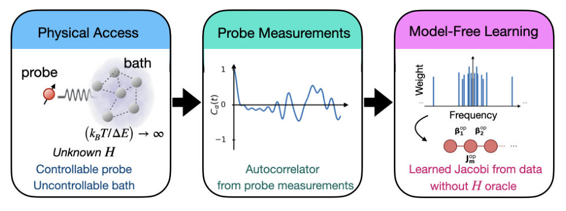
<figcaption class="paper-figure-caption"><b>Fig 1.</b> Figure 1: Overview of Quantum Krylov Learning (QKL). Physical access. A fully controlled probe is coupled to an uncontrolled and unmeasured bath. The probe-bath system evolves under an unknown total Hamiltonian H. The bath is assumed to be at effectively infinite temperature. More precisely it is in the regime kBT ≫∆E, where ∆E denotes the characteristic internal energy scale of the bath. Probe time trace. For a chosen probe operator σα, the autocorrelation Cα(t) is extracted from measurements of the probe after free time evolution. Appropriate initial probe states are chosen according to σα, so that only single-probe measurements are required. Model- free learning. The measured...</figcaption>
</figure>
<figure class="paper-figure-card">
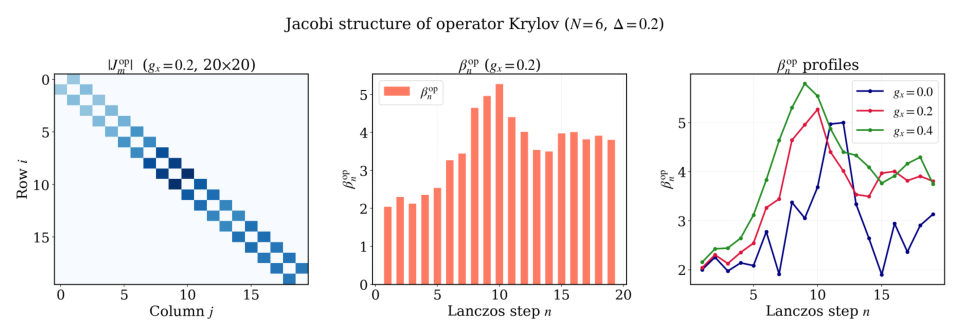
<figcaption class="paper-figure-caption"><b>Fig 2.</b> Figure 2: Oracle construction of the operator Krylov Jacobi structure (N = 6, ∆= 0.2). Left, heatmap of |Jop m | (20 × 20) for gx = 0.2. The exactly tridiagonal pattern confirms Theorem 1, with off-tridiagonal entries at machine precision (≲10−15). Center, subdiagonal coefficients βop n versus Lanczos step n for gx = 0.2 (the diagonal αop n is omitted since it is zero at machine precision). Right, βop n profiles for gx ∈{0, 0.2, 0.4}. Larger gx gives larger βop n for n ≲10, reflecting faster operator spreading under stronger symmetry breaking. Beyond the peak the ordering is no longer monotonic in gx. The peak near n ≈10 reflects operator spreading before finite-size saturation.</figcaption>
</figure>
<figure class="paper-figure-card">

<figcaption class="paper-figure-caption"><b>Fig 3.</b> Figure 5 verifies Theorem 3 numerically. For the model above (Eq. (24)), we construct the same op- erator Krylov Jacobi matrix Jop m in three ways and compare them. (A) The oracle is the ordinary op- erator Lanczos that applies the commutator L = [H, · ] directly to the seed σα p in the D2-dimensional Liouville space, assuming full knowledge of H. It cannot be used in a restricted-access experiment but gives the numerical ground truth. (B) Exact diagonalization of H builds the exact spectral measure µα from the true Bohr frequencies ωjk = Ej −Ek and weights |⟨Ej|σα p |Ek⟩|2/(D∥σα p ∥2 HS), and applies the Stieltjes/Lanczos procedure to it. (B) is not built from a time series and is...</figcaption>
</figure>
<figure class="paper-figure-card">
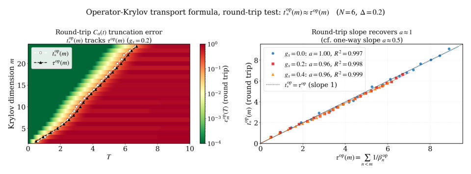
<figcaption class="paper-figure-caption"><b>Fig 4.</b> Figure 3: Direct round-trip verification of the operator transport formula (14) (N = 6, ∆= 0.2, ϵop m (T) = maxs≤T |Cα(s) −C(m) α (s)|, the truncation error of the operator autocorrelation Cα(t) = (Q0|eiJop m t|Q0) itself, i.e., the state-independent return element bounded by Eq. (33)). Left, heatmap of ϵop m (T) for gx = 0.2 with the break time top ∗(m) (white) at threshold 0.1, tracking τ op(m) (black) closely. Right, top ∗(m) versus τ op(m) with the affine fit top ∗= a τ op +b for gx ∈{0, 0.2, 0.4}, yielding (a, R2) = (1.00, 0.997), (0.96, 0.998), (0.96, 0.999), respectively, with the intercept b ≈0 in all cases. The round-trip slope recovers a ≈1, matching the state Krylov result of...</figcaption>
</figure>
<figure class="paper-figure-card">
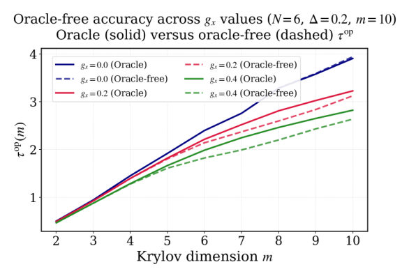
<figcaption class="paper-figure-caption"><b>Fig 5.</b> Figure 4: Accuracy of the oracle-free τ op across gx (N = 6, ∆= 0.2, m = 10, TC = 160). Oracle (solid) versus oracle-free (dashed) τ op(m) for gx ∈{0, 0.2, 0.4}. The curves closely track each other over the whole Krylov depth shown. Final relative errors at m = 10 are 0.9% (gx = 0), 3.2% (gx = 0.2), and 6.6% (gx = 0.4).</figcaption>
</figure>
</div>

<p><strong>Summary.</strong> This paper introduces Quantum Krylov Learning (QKL), a novel technique to deduce the spectral properties of an unknown quantum Hamiltonian using only measurements from a controlled probe coupled to the system. By analyzing the probe's autocorrelation function, QKL reconstructs the system's dynamical structure without requiring any assumptions about the Hamiltonian's form or symmetry. This makes it a highly general and powerful tool for quantum characterization in experimental settings.</p>
<p><strong>Why it may be interesting.</strong> This work provides a powerful, general framework for quantum characterization that bypasses the need for specific symmetries or known model Hamiltonians, which is crucial for analyzing complex, unknown quantum materials or sensing environments.</p>
<details>
<summary>Detailed structure</summary>
<p><strong>Main problem.</strong> To develop a model-independent method for extracting the spectral information of an unknown quantum Hamiltonian from limited measurements performed via a controllable probe.</p>
<p><strong>Main result.</strong> Quantum Krylov Learning (QKL) reconstructs the operator Krylov Jacobi matrix representing the system's accessible dynamical modes directly from probe autocorrelators, requiring no prior knowledge of the Hamiltonian's symmetry or parametric form.</p>
<p><strong>Method.</strong> The method uses the single-temperature probe autocorrelator and its operator Krylov structure, applying the Lanczos process to the Liouvillian superoperator to generate a tridiagonal Jacobi matrix.</p>
<p><strong>Model / system.</strong> The system consists of an unknown total Hamiltonian H governing a quantum system, which is decomposed into a controllable probe coupled to an unmeasured bath. The analysis is performed in the Liouville space using the probe's time evolution.</p>
<p><strong>Key observables.</strong> Probe autocorrelator C_alpha(t), the operator Krylov Jacobi matrix (J_op), and the spectral measure mu_alpha.</p>
<p><strong>Important parameters / regimes.</strong> Spectral precision epsilon (achieving polynomial scaling in 1/epsilon), and the assumption of infinite temperature for the bath.</p>
<p><strong>Assumptions / limitations.</strong> The unobserved bath is assumed to be at or near infinite temperature (k_B T &gt;&gt; Delta E), and the required operations are limited to probe state preparation, free evolution under H, and probe measurement.</p>
<p><strong>Figures summary.</strong> Figure 1 illustrates the QKL pipeline, showing the flow from physical access (probe coupled to bath) to the time trace (C_alpha(t)) and finally to the model-free learning of the Jacobi matrix (J_op).</p>
<p><strong>Paper structure.</strong> The paper introduces QKL, details the mathematical framework using the operator Krylov subspace and the Lanczos process, establishes the model-independent nature of the reconstruction, and concludes with theoretical bounds (Lieb-Robinson) and sample complexity guarantees.</p>
</details>
<details>
<summary>Abstract</summary>
<p>The Hamiltonian of a natural quantum system is usually determined indirectly, by proposing microscopic models and comparing their predicted observables with experiment. A more direct approach is to extract information about the Hamiltonian from measurements on the system itself. In many settings, however, direct access to the full system is unavailable and measurements can be performed only through controllable probes, as in quantum sensing and boundary spectroscopy. Existing Hamiltonian learning protocols under such restricted access typically require a special symmetry, a known parametric form, or controlled operations beyond free evolution. We introduce Quantum Krylov Learning (QKL), a restricted-access framework that avoids these requirements. QKL uses single temperature probe autocorrelators and their operator Krylov structure to extract model-independent spectral information about the unknown system. Rather than fitting a parametrized Hamiltonian, it reconstructs the operator Krylov Jacobi matrix representing the dynamical modes accessible to the probe. The method assumes that the unobserved system is at, or near, infinite temperature. Under this condition, the Jacobi matrix can be reconstructed directly from the autocorrelation of a probe observable, without oracle access to the Hamiltonian. The required operations are free evolution under the unknown $H$, together with probe state preparation and measurement. The learning core therefore requires no symmetry, no parametric model, and no controlled-unitary gates. We show a Lieb--Robinson bound for the operator Krylov chain and derive a data-driven criterion for the required observation window. We also establish an end-to-end sample complexity guarantee: under generic conditions on the spectral gaps and weights, the number of measurement shots required to achieve spectral precision $\varepsilon$ is polynomial in $1/\varepsilon$.</p>
</details>
<p><sub><a href="#top">↑ back to top</a></sub></p>

<p><a id="paper-2610.01862"></a></p>
<h3 id="coherent-release-fronts-in-krylov-chains-and-thermal-adsmath237math-response"><a href="http://arxiv.org/abs/2610.01862v1">Coherent Release Fronts in Krylov Chains and Thermal AdS$_2$ Response</a></h3>
<p><strong>Authors:</strong> Mohsen Alishahiha<br>
<strong>Type:</strong> theory · <strong>Category:</strong> statistical mechanics · <strong>PDF:</strong> <a href="https://arxiv.org/pdf/2610.01862v1">https://arxiv.org/pdf/2610.01862v1</a><br>
<strong>Analysis basis:</strong> full PDF text, analyzed in chunks
<strong>Topic relevance:</strong> <code>non-equilibrium universality</code> <strong>3/5</strong> · <code>Keldysh / 2PI / non-Gaussian methods</code> <strong>2/5</strong> · <code>methods for driven-dissipative</code> <strong>2/5</strong> · <code>Frenkel-Kontorova</code> <strong>1/5</strong> · <code>analog quantum simulation</code> <strong>1/5</strong> · <code>correlated / nonlocal dissipation</code> <strong>1/5</strong> · <code>driven-dissipative phase transition</code> <strong>1/5</strong> · <code>quantum measurements</code> <strong>1/5</strong> · <code>scars &amp; prethermalization</code> <strong>1/5</strong></p>
<div class="figure-strip-hint">↔ Scroll figures horizontally</div>
<div class="paper-figures-scroll">
<figure class="paper-figure-card">
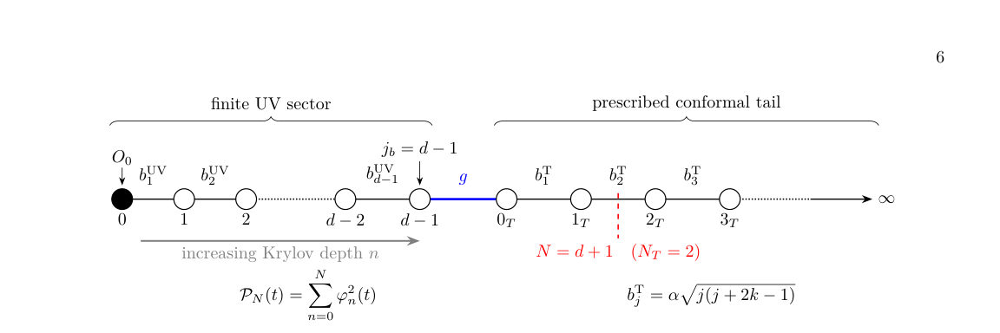
<figcaption class="paper-figure-caption"><b>Fig 1.</b> FIG. 1. A finite UV sector coupled through g (blue) to a prescribed conformal tail. The red observation boundary is drawn after 1T : the illustrated cut includes NT = 2 tail sites, so its last global index is N = d + 1. It is a projection boundary, not an absorbing wall. The chain remains discrete; a smooth-envelope description in logarithmic depth applies only at large index.</figcaption>
</figure>
</div>

<p><strong>Summary.</strong> This work analyzes how quantum information or spectral weight coherently leaks from a localized, finite quantum subsystem into an infinite, exactly solvable continuum tail. By deriving the moving-cut limit, the authors characterize the spectral dynamics, showing that the tail sets the long-distance scale while the finite structure governs the initial emission profile. This framework is applied to model physical systems related to thermal AdS2 geometry.</p>
<p><strong>Why it may be interesting.</strong> The connection between spectral dynamics (Krylov chains) and holographic/CFT structures (AdS2) provides powerful tools for understanding non-equilibrium dynamics in complex quantum systems, relevant to open quantum systems.</p>
<details>
<summary>Detailed structure</summary>
<p><strong>Main problem.</strong> The paper investigates the coherent release of spectral weight from a finite, structured quantum sector (Krylov chain) into an exactly solvable, continuous conformal tail.</p>
<p><strong>Main result.</strong> The moving-cut limit of the occupation kernel is derived, showing that the tail dictates the logarithmic transit scale while the finite sector determines the initial release profile.</p>
<p><strong>Method.</strong> The analysis uses techniques involving the exact finite-cut occupation kernel, moving-cut limits, and spectral analysis derived from the structure of the Krylov basis and associated determinants.</p>
<p><strong>Model / system.</strong> The core model is an operator dynamics problem involving a finite serial Krylov sector coupled to an exact conformal tail, which is further realized in the context of thermal AdS2 geometry.</p>
<p><strong>Key observables.</strong> Cumulative occupation probability ($P_N(t)$), coherent current ($J_{N+1}$), and the boundary-emission amplitude.</p>
<p><strong>Important parameters / regimes.</strong> The coupling strength between the finite sector and the tail, and the weak-coupling limit ($\lambda 	o 0$) in the AdS2 realization.</p>
<p><strong>Assumptions / limitations.</strong> The thermal AdS2 realization assumes a fixed scalar background, neglecting gravitational backreaction and Schwarzian fluctuations.</p>
<p><strong>Figures summary.</strong> Figure 1 illustrates the coupling structure: a finite UV sector coupled via an interface bond to the conformal tail, with the observation cut defined by the total number of bonds.</p>
<p><strong>Paper structure.</strong> The paper progresses by defining the system via Krylov dynamics, deriving the kernel and its moving-cut limit, analyzing the spectral density in the coupled system, and finally applying these results to the thermal AdS2 realization.</p>
</details>
<details>
<summary>Abstract</summary>
<p>We study coherent release from a finite serial Krylov sector into an exact conformal tail with asymptotically linear Lanczos coefficients. We derive an exact finite-cut occupation kernel and its locally uniform moving-cut limit, whose derivative is the squared modulus of a filtered boundary-emission amplitude. The tail sets the filtering kernel and logarithmic transit scale, while the release profile also depends on the finite sector. Its early edge records the number of serial steps before emission, whereas its late edge reflects slow resonances, interference, and logarithmic enhancements from merged poles. A one- and two-site family can share the same leading continued-fraction pole while exhibiting inequivalent profiles. We further consider a thermal AdS$_2$ realization in which, in the weak-coupling limit, the dressed oscillator measure approaches a two-site shallow sector followed by the conformal tail, with the leading complex pole reproduced through second order.</p>
</details>
<p><sub><a href="#top">↑ back to top</a></sub></p>

<p><a id="paper-2610.01814"></a></p>
<h3 id="collision-models-markovian-and-non-markovian-impurity-models"><a href="http://arxiv.org/abs/2610.01814v1">Collision models: Markovian and Non-Markovian impurity models</a></h3>
<p><strong>Authors:</strong> Jacob Werner<br>
<strong>Type:</strong> theory · <strong>Category:</strong> other · <strong>PDF:</strong> <a href="https://arxiv.org/pdf/2610.01814v1">https://arxiv.org/pdf/2610.01814v1</a><br>
<strong>Analysis basis:</strong> full PDF text, analyzed in chunks
<strong>Topic relevance:</strong> <code>correlated / nonlocal dissipation</code> <strong>3/5</strong> · <code>driven-dissipative phase transition</code> <strong>3/5</strong> · <code>methods for driven-dissipative</code> <strong>3/5</strong> · <code>non-equilibrium universality</code> <strong>2/5</strong> · <code>Keldysh / 2PI / non-Gaussian methods</code> <strong>1/5</strong> · <code>quantum measurements</code> <strong>1/5</strong></p>
<div class="figure-strip-hint">↔ Scroll figures horizontally</div>
<div class="paper-figures-scroll">
<figure class="paper-figure-card">
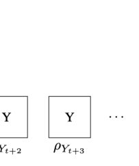
<figcaption class="paper-figure-caption"><b>Fig 1.</b> Figure 1: Markovian CM schematic</figcaption>
</figure>
<figure class="paper-figure-card">
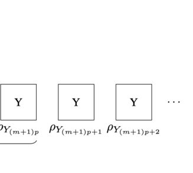
<figcaption class="paper-figure-caption"><b>Fig 2.</b> Figure 2: Markovian impurity model schematic</figcaption>
</figure>
<figure class="paper-figure-card">
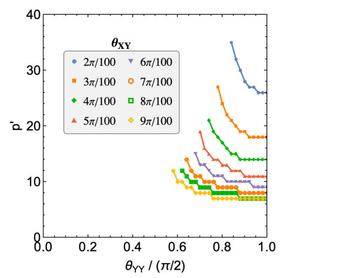
<figcaption class="paper-figure-caption"><b>Fig 3.</b> Figure 3: p′ is plotted against θY Y for different values of θXY , with ρY = ρth(0.3). The BLP measure NBLP was calculated using the σx eigenstates as the initial state pair. The curves approach an asymptote as θY Y is decreased.</figcaption>
</figure>
<figure class="paper-figure-card">
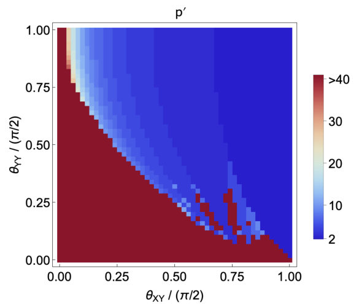
<figcaption class="paper-figure-caption"><b>Fig 4.</b> Figure 4: p′ is plotted as a function of θXY and θY Y , with ρY = ρth(0.3). Due to computational constraints, we only checked up to p = 40 for non-Markovianity. Therefore, p′ &gt; 40 could correspond to a genuine p′ &gt; 40 or that the process will remain Markovian even for p = ∞.</figcaption>
</figure>
<figure class="paper-figure-card">
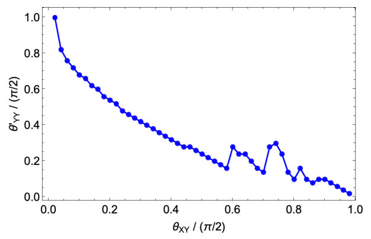
<figcaption class="paper-figure-caption"><b>Fig 5.</b> Figure 5: The maximum value of θY Y for which p = ∞still satisfies NBLP = 0 is plotted against θXY .</figcaption>
</figure>
</div>

<p><strong>Summary.</strong> This paper develops and analyzes a novel Markovian impurity model within the framework of collision models to study open quantum systems. Using the BLP measure, the authors establish a critical impurity parameter $p'$ that marks the transition point from Markovian to non-Markovian dynamics. The results show that interaction strengths can tune this critical point, offering deeper insight into the environmental memory effects in quantum dynamics.</p>
<p><strong>Why it may be interesting.</strong> This work provides a rigorous theoretical tool (the critical $p$) to characterize when complex open quantum dynamics, modeled by sequential environmental coupling, transition from simple Markovian behavior to complex non-Markovian regimes, which is crucial for quantum memory and computation.</p>
<details>
<summary>Detailed structure</summary>
<p><strong>Main problem.</strong> The paper investigates the non-Markovian nature of open quantum systems modeled by collision models, specifically focusing on a novel class called Markovian impurity models.</p>
<p><strong>Main result.</strong> The authors prove that non-Markovianity propagates: if a $p$-impurity model is non-Markovian, the $(p+1)$-impurity model is also non-Markovian, establishing a critical impurity parameter $p'$ that dictates the transition from Markovian to non-Markovian dynamics.</p>
<p><strong>Method.</strong> The non-Markovianity is quantified using the Breuer-Laine-Piilo (BLP) measure, and the analysis involves comparing the dynamics of $p$-impurity models against $(p+1)$-impurity models.</p>
<p><strong>Model / system.</strong> The system uses Collision Models (CMs) where the environment interaction is modeled via sequential ancilla interactions. The focus is on the Markovian impurity model, defined by alternating evolution steps involving system-ancilla ($U_{XY}$) and ancilla-ancilla ($U_{YY}$) interactions.</p>
<p><strong>Key observables.</strong> Non-Markovianity quantified by the BLP measure ($N_{BLP}$) and the change in trace distance ($\Delta D(t)$).</p>
<p><strong>Important parameters / regimes.</strong> The impurity parameter ($p$), the critical $p'$ value, and the interaction strengths ($  heta_{XY}$ and $    heta_{YY}$).</p>
<p><strong>Assumptions / limitations.</strong> The analysis assumes time-independent unitaries and uses the BLP measure to diagnose non-Markovianity. Numerical simulations are limited to $p \le 40$.</p>
<p><strong>Figures summary.</strong> Figures illustrate the dependence of the critical $p'$ on interaction strengths ($  heta_{XY}$ and $    heta_{YY}$), showing how increasing these strengths generally lowers $p'$, and also plot the asymptotic value of $   heta_{YY}$ where the process remains Markovian.</p>
<p><strong>Paper structure.</strong> The paper introduces the collision model framework and the Markovian impurity model. It then uses the BLP measure to establish the relationship between $p$ and non-Markovianity, culminating in numerical investigations of how interaction strengths tune the critical parameter $p'$.</p>
</details>
<details>
<summary>Abstract</summary>
<p>Collision models provide a flexible framework for studying open quantum systems and introducing non-Markovianity. We present a novel class of collision models, which we term Markovian impurity models, motivated by physical scenarios in which information backflow is periodically blocked. Using the Breuer-Laine-Piilo (BLP) measure of non-Markovianity, we show that if a $p$-impurity model is non-Markovian, then the corresponding $(p+1)$-impurity model is also non-Markovian, implying the existence of a critical $p$ at which the process transitions from Markovian to non-Markovian. Numerical simulations are used to investigate how this critical parameter depends on the system-ancilla and ancilla-ancilla interaction strengths. We find that, altough exceptions exist, increasing either interaction strength generally lowers the critical $p$, while sufficiently weak ancilla-ancilla interactions lead to a regime in which the dynamics remain Markovian even in the absence of impurities. Finally, we briefly introduce the complementary non-Markovian impurity model.</p>
</details>
<p><sub><a href="#top">↑ back to top</a></sub></p>

<p><a id="paper-2610.00634"></a></p>
<h3 id="enhanced-long-wavelength-fluctuations-and-interaction-stress-correlations-in-active-crystals"><a href="http://arxiv.org/abs/2610.00634v1">Enhanced Long-Wavelength Fluctuations and Interaction-Stress Correlations in Active Crystals</a></h3>
<p><strong>Authors:</strong> Antik Bhattacharya, Smarajit Karmakar<br>
<strong>Type:</strong> theory · <strong>Category:</strong> statistical mechanics · <strong>PDF:</strong> <a href="https://arxiv.org/pdf/2610.00634v1">https://arxiv.org/pdf/2610.00634v1</a><br>
<strong>Analysis basis:</strong> full PDF text, analyzed in chunks
<strong>Topic relevance:</strong> <code>non-equilibrium universality</code> <strong>3/5</strong> · <code>Keldysh / 2PI / non-Gaussian methods</code> <strong>2/5</strong> · <code>methods for driven-dissipative</code> <strong>2/5</strong> · <code>Frenkel-Kontorova</code> <strong>1/5</strong> · <code>analog quantum simulation</code> <strong>1/5</strong> · <code>correlated / nonlocal dissipation</code> <strong>1/5</strong> · <code>driven-dissipative phase transition</code> <strong>1/5</strong> · <code>quantum measurements</code> <strong>1/5</strong> · <code>scars &amp; prethermalization</code> <strong>1/5</strong></p>
<div class="figure-strip-hint">↔ Scroll figures horizontally</div>
<div class="paper-figures-scroll">
<figure class="paper-figure-card">

<figcaption class="paper-figure-caption"><b>Fig 1.</b> FIG. 1. Activity-enhanced displacement fluctuations in the two-dimensional crystal. (a) Transverse displacement covariance Cu T (q) = ⟨|uT (q)|2⟩and (b) longitudinal displacement covariance Cu L(q) = ⟨|uL(q)|2⟩for the indicated propulsion strengths f0. The passive spectra are consistent with the conventional elastic scaling Cu λ(q) ∼q−2. Increasing activity selectively enhances the long-wavelength modes. At low-q, the transverse spectrum approaches the q−3 guide, whereas the longitudinal spectrum displays a weaker effective dependence, approximately q−2.5.</figcaption>
</figure>
<figure class="paper-figure-card">

<figcaption class="paper-figure-caption"><b>Fig 2.</b> FIG. 2. (a) Static response stiffness Kresp,λ(q) = χ−1 λ (q) for the longitudinal and transverse polarizations. Different open symbols denote the probe amplitudes A = 5 × 10−4, 10−3, and 2 × 10−3 and f0 = 2.0. Their collapse demonstrates that the probe lies within the linear-response regime. Both polarizations exhibit the ordinary elastic scaling Kresp,λ(q) ∼q2, rather than the |q|3 behavior inferred from covariance inversion. The dashed and dotted lines indicate q2 and q3 guides, respectively. (b) Equal-time mode-dependent fluctuation–response ratio Tmode,λ(q) = Kresp,λ(q)Cu λ(q) for the longitudinal and transverse polarizations for f0 = 2.0. Both branches increase toward small q,...</figcaption>
</figure>
<figure class="paper-figure-card">

<figcaption class="paper-figure-caption"><b>Fig 3.</b> Figure 2(b) shows Tmode,λ(q) obtained by combining the measured response kernel with the displacement co- variance for f0 = 2.0. Both polarizations exhibit an en- hancement toward small q, with a substantially larger amplitude in the transverse sector. The transverse data are approximately compatible with a q−1 dependence over the low q regime. The longitudinal data show a weaker increase, and therefore do not establish a clean inverse-q scaling. At larger q, both polarizations ap- proach the thermal background scale, Tmode,λ ≃kBT, indicating that the nonequilibrium enhancement is con- centrated predominantly in the long-wavelength modes.</figcaption>
</figure>
<figure class="paper-figure-card">

<figcaption class="paper-figure-caption"><b>Fig 4.</b> FIG. 3. Tests of nonlocal kinetic mechanisms. (a,b) Normalised response Rλ(q, t) for different low-q transverse and longitudinal modes, respectively, at activity strength f0 = 2.0. (c) Wave-vector-dependent mobility Mλ(q) = 1/ζλ(q) obtained from the dynamic response. Both longitudinal and transverse mobilities remain approximately constant, consistent with the q0 guide and inconsistent with the singular Mλ ∼q−1 behavior for f0 = 2.0. (d) Dynamic stiffness Kλ fitted from the response function.</figcaption>
</figure>
<figure class="paper-figure-card">

<figcaption class="paper-figure-caption"><b>Fig 5.</b> FIG. 4. Normalised gλ correlation for (a) transverse and (b) longitudinal modes as a function of time for different low-q values at activity strength f0 = 2.0. (c) Correlation time τ f λ (q) of the bare active-force modes for different propulsion strengths. The longitudinal and transverse results remain close to the single-particle persistence time D−1 r and do not follow the q−1 guide. (c) Correlation time τ g λ(q) of the effective residual force gλ = f a λ + (f int λ −f harm λ ). Insets: integrated autocorrelation intensities, Dλ(q), for active and residual force with activity strength f0 = 2.0 for longitudinal and transverse modes.</figcaption>
</figure>
</div>

<p><strong>Summary.</strong> This work analyzes how activity fundamentally alters the long-wavelength fluctuations in crystalline solids, showing that the enhancement scales as $q^{-3}$ rather than the expected $q^{-2}$. The authors demonstrate that this anomaly originates from long-range stress correlations induced by the active forces, providing a key theoretical insight into non-equilibrium solid physics.</p>
<p><strong>Why it may be interesting.</strong> While focused on classical active matter, the methodology of analyzing non-equilibrium fluctuations and deviations from equilibrium theorems (like MWH) is highly relevant to understanding open quantum systems and dissipation in quantum many-body dynamics.</p>
<details>
<summary>Detailed structure</summary>
<p><strong>Main problem.</strong> The paper investigates the microscopic origin of enhanced long-wavelength density fluctuations in active solids, which violate equilibrium predictions like the Mermin-Wagner-Hohenberg theorem.</p>
<p><strong>Main result.</strong> Activity enhances long-wavelength fluctuations, causing the displacement covariance to scale anomalously as $q^{-3}$ (instead of $q^{-2}$), and this anomaly is traced to long-range stress correlations rather than mechanical softening.</p>
<p><strong>Method.</strong> The study uses theoretical analysis of active Brownian motion, calculating displacement covariances, response stiffness, and interaction-stress spectra in Fourier space.</p>
<p><strong>Model / system.</strong> The system modeled is a two-dimensional active Brownian crystal, governed by equations of motion incorporating conservative pair forces and active propulsion forces.</p>
<p><strong>Key observables.</strong> Displacement covariance ($\langle |u_\lambda(q)|^2 
angle$), interaction-stress spectra ($S_{	ext{stress}}(q)$), and the resulting Mean Squared Displacement (MSD) scaling.</p>
<p><strong>Important parameters / regimes.</strong> Propulsion strength ($f_0$), wavevector ($q$), and dimensionality (2D and 3D).</p>
<p><strong>Assumptions / limitations.</strong> The analysis relies on decomposing the covariance and comparing it against predictions from linear elasticity and equilibrium fluctuation theories.</p>
<p><strong>Figures summary.</strong> Figures illustrate the $q^{-3}$ enhancement of displacement and stress spectra in active crystals compared to passive ones, and show the scaling of the MSD with system size L.</p>
<p><strong>Paper structure.</strong> The paper progresses by first establishing the anomalous scaling of the displacement covariance ($q^{-3}$ vs $q^{-2}$), then ruling out nonlocal elastic softening by comparing it to the measured response stiffness ($q^2$), and finally attributing the anomaly to the structure of non-equilibrium stress fluctuations.</p>
</details>
<details>
<summary>Abstract</summary>
<p>Activity can enhance the long-wavelength density fluctuations of a solid beyond the equilibrium fluctuations predicted by the Mermin-Wagner-Hohenberg theorem, but the microscopic origin of this enhancement remains unclear. We study a two-dimensional active Brownian crystal whose longitudinal and transverse displacement covariances scale as $C^u_λ(q)\sim q^{-3}$ as compared to the passive counterpart with $q^{-2}$ law. This spectrum predicts an MSD-plateau divergence proportional to $L$ in two dimensions, logarithmic in three dimensions, and finite in four dimensions, in close correspondence with recent results reported in Dey et al. [Nat. Commun. 16, 5498 (2025)]. Inverse of the Covariance gives $H^{\mathrm{cov}}_λ\sim |q|^3$ with the corresponding dispersion $ω_{\mathrm{cov},λ}\sim q^{3/2}$, whereas direct mechanical response gives $K_{\mathrm{resp},λ}\sim q^2$ and acoustic modes with $ω_{0,λ}\sim q$. The nonlinear dispersion is therefore covariance-defined rather than mechanical. The mobility and integrated active-force correlations remain non-singular, although a finite-persistence crossover cannot be ruled out completely with the existing data. Microscopically, the longitudinal and transverse Irving-Kirkwood interaction-stress spectra scale as $q^{-1}$. The transverse stress-stress correlation connects well with the anomalous displacement field, indicating that activity anomalously populates ordinary acoustic modes, while the conservative interaction network transmits the resulting fluctuations as long-ranged stress. A three-dimensional active FCC crystal exhibits the same paired low-$q$ trends.</p>
</details>
<p><sub><a href="#top">↑ back to top</a></sub></p>

<p><a id="paper-2610.01248"></a></p>
<h3 id="work-fluctuation-speed-limit-in-boundary-conformal-field-theories"><a href="http://arxiv.org/abs/2610.01248v1">Work fluctuation speed limit in boundary conformal field theories</a></h3>
<p><strong>Authors:</strong> Shihao Xia, Ahsan Nazir, Harry J. D. Miller<br>
<strong>Type:</strong> theory · <strong>Category:</strong> statistical mechanics · <strong>PDF:</strong> <a href="https://arxiv.org/pdf/2610.01248v1">https://arxiv.org/pdf/2610.01248v1</a><br>
<strong>Analysis basis:</strong> full PDF text, analyzed in chunks
<strong>Topic relevance:</strong> <code>analog quantum simulation</code> <strong>3/5</strong> · <code>non-equilibrium universality</code> <strong>3/5</strong> · <code>Keldysh / 2PI / non-Gaussian methods</code> <strong>2/5</strong> · <code>driven-dissipative phase transition</code> <strong>2/5</strong> · <code>quantum measurements</code> <strong>2/5</strong> · <code>methods for driven-dissipative</code> <strong>1/5</strong></p>
<div class="figure-strip-hint">↔ Scroll figures horizontally</div>
<div class="paper-figures-scroll">
<figure class="paper-figure-card">

<figcaption class="paper-figure-caption"><b>Fig 1.</b> FIG. 1. Finite-temperature fluctuation speed limit and its saturating protocol. (a),(b) Speed limits and saturating pro- tocols for ∆= 0.1, 0.2, 0.3, 0.4, and 0.5 at Λβ = 100. (c) Ratio τSL/τlin as a function of temperature T/Λ and reduced work fluctuation σ2 W /ℏα2 for ∆= 0.1. (d) Analytical Kibble– Zurek-regime ratio τSL/τlin as a function of ∆.</figcaption>
</figure>
<figure class="paper-figure-card">

<figcaption class="paper-figure-caption"><b>Fig 2.</b> FIG. 2. Velocity-constrained optimal control in the Kibble–Zurek regime. (a) Optimal dimensionless velocity w∗(t/τ) = τv∗(t). (b) Corresponding optimal protocol g∗(t/τ). In (a) and (b), the yellow dashed curves represent the unconstrained solutions, while the blue solid curves represent the velocity-constrained solutions with wmax = 1.1. (c) Ratio τu/τc between the unconstrained and velocity-constrained speed-limit times as a function of vmax/Λ for ∆= 0.1.</figcaption>
</figure>
<figure class="paper-figure-card">

<figcaption class="paper-figure-caption"><b>Fig 3.</b> Fig. 1(d) shows this analytical result, where the ratio approaches unity as ∆→1/2, consistent with the disap- pearance of the optimization gain near the local-kernel threshold. Finally, we observe that the largest improve- ment of optimal protocols is found within the cross-over regime, as indicated by the blue region in Fig. 1(c). Velocity constraints.— Next we observe that for the optimal solution Eq. (15), the velocity of the coupling diverges at the endpoints of the protocol. For prac- tical implementations this motivates imposing a finite- bandwidth constraint on the protocol velocity,</figcaption>
</figure>
</div>

<p><strong>Summary.</strong> This paper establishes a universal, fluctuation-based speed limit for controlling quantum systems near a quantum critical point described by BCFT. By minimizing the work variance, the authors derive the minimum time required for driving, showing how this limit interpolates between different physical regimes. This provides a crucial theoretical benchmark for experimental quantum control in platforms like superconducting circuits and quantum impurities.</p>
<p><strong>Why it may be interesting.</strong> This work establishes a fundamental, universal constraint on how fast quantum systems can be controlled near criticality, which has direct implications for experimental protocols in quantum simulation and quantum information.</p>
<details>
<summary>Detailed structure</summary>
<p><strong>Main problem.</strong> The paper derives an exact, saturable fluctuation-based speed limit for performing finite-time driving in quantum critical systems.</p>
<p><strong>Main result.</strong> The minimum driving time is bounded by a universal speed limit ($  au_{    ext{SL}}$) that provides a work precision–time tradeoff, applicable across various quantum platforms.</p>
<p><strong>Method.</strong> The analysis uses generalized linear response theory, variational calculus, and conformal field theory techniques to minimize the work fluctuation cost.</p>
<p><strong>Model / system.</strong> The study focuses on quantum critical systems described by Boundary Conformal Field Theory (BCFT), modeled by a time-dependent Hamiltonian $H_t = H_{	ext{BCFT}} + \lambda_t O_B(x=0)$.</p>
<p><strong>Key observables.</strong> The fluctuation cost is quantified by the second cumulant of work, $\langle \sigma^2_W 
angle$, and the speed limit $  au_{    ext{SL}}$.</p>
<p><strong>Important parameters / regimes.</strong> The scaling dimension ($\Delta$) is a key parameter, and the results interpolate between the Kibble-Zurek (KZ) and adiabatic regimes.</p>
<p><strong>Assumptions / limitations.</strong> The analysis relies on the weak-driving approximation ($\vert\alpha\vert \ll 1$) and the applicability of BCFT descriptions.</p>
<p><strong>Figures summary.</strong> Figures illustrate the speed limit ($  au_{    ext{SL}}$) and the optimal protocols for various scaling dimensions ($\Delta$), showing the crossover between different driving regimes.</p>
<p><strong>Paper structure.</strong> The paper builds from deriving the general fluctuation cost functional using linear response theory, solving the constrained variational problem to find the speed limit, and then analyzing the resulting optimal protocol across different physical regimes (KZ, adiabatic).</p>
</details>
<details>
<summary>Abstract</summary>
<p>We explore the fundamental limits on finite-time driving in quantum critical systems described by boundary conformal field theory. We show that stochastic work fluctuations arising from external driving are a resource for speedy control, and derive an exact, saturable fluctuation-based speed limit in weakly driven boundary conformal field theories at finite temperature. The bound and saturating protocol can be expressed entirely in terms of the universal scaling dimension, and the result interpolates between the Kibble--Zurek regime,where temporal correlations are strongly nonlocal, and an adiabatic regime where linear driving becomes optimal. For small scaling dimension, the enhanced temporal correlations produce pronounced departures from linear protocols and a larger optimization advantage. These results establish a universal work precision--time tradeoff for boundary-critical control, applicable to quantum impurity, fractional quantum Hall, and superconducting-circuit platforms.</p>
</details>
<p><sub><a href="#top">↑ back to top</a></sub></p>

<p><a id="paper-2610.00750"></a></p>
<h3 id="esqueranto-differentiable-structured-quantum-light-for-automated-scientific-discovery"><a href="http://arxiv.org/abs/2610.00750v1">esQueranto: Differentiable Structured Quantum Light for Automated Scientific Discovery</a></h3>
<p><strong>Authors:</strong> Marcello Armezzani, Tareq Jaouni, Pontus Lindgren, Sören Arlt, Mario Krenn, Xuemei Gu<br>
<strong>Type:</strong> theory · <strong>Category:</strong> quantum information and computing · <strong>PDF:</strong> <a href="https://arxiv.org/pdf/2610.00750v1">https://arxiv.org/pdf/2610.00750v1</a><br>
<strong>Analysis basis:</strong> full PDF text, analyzed in chunks
<strong>Topic relevance:</strong> <code>analog quantum simulation</code> <strong>3/5</strong> · <code>interference shaping light</code> <strong>3/5</strong> · <code>methods for driven-dissipative</code> <strong>3/5</strong> · <code>correlated / nonlocal dissipation</code> <strong>1/5</strong> · <code>driven-dissipative phase transition</code> <strong>1/5</strong> · <code>quantum measurements</code> <strong>1/5</strong></p>
<div class="figure-strip-hint">↔ Scroll figures horizontally</div>
<div class="paper-figures-scroll">
<figure class="paper-figure-card">

<figcaption class="paper-figure-caption"><b>Fig 1.</b> FIG. 1. esQueranto combines physical capabilities (a) in a shared experiment design space (b). Gray dots represent individual experiments, and shaded regions indicate domains of specialized models. Stars highlight possible new experiments that combine capabilities beyond these domains; the robot illustrates automated search.</figcaption>
</figure>
<figure class="paper-figure-card">

<figcaption class="paper-figure-caption"><b>Fig 2.</b> FIG. 2. Four-crystal setup and four-photon coincidence prob- ability. (a) Four two-mode squeezers act on modes a, b, c, d, with a phase shifter in path a between sources I and III. (b) Simulated four-photon coincidence probability P(1, 1, 1, 1) as a function of r1 and r3, with r1 = r2, r3 = r4, and ϕ = π. The dashed line marks the analytical destructive-interference condition in Ref. [30].</figcaption>
</figure>
<figure class="paper-figure-card">

<figcaption class="paper-figure-caption"><b>Fig 3.</b> FIG. 3. Generation of NOON-like states from coherent and squeezed light [31]. (a) A coherent field is mixed at a bal- anced beam splitter with a squeezed-vacuum state generated by collinear SPDC. (b) Simulated joint photon-number distri- bution P(m, n) at the two outputs, where the bar height gives the probability of detecting m and n photons. The larger bars near the two axes show that the photons tend to emerge to- gether from either output port.</figcaption>
</figure>
<figure class="paper-figure-card">

<figcaption class="paper-figure-caption"><b>Fig 4.</b> FIG. 4. Heralded eight-photon path entanglement from the input |3, 3, 3, 1⟩, following Ref. [24].</figcaption>
</figure>
<figure class="paper-figure-card">

<figcaption class="paper-figure-caption"><b>Fig 5.</b> FIG. 5. Gravity-sensitive fiber interferometer. (a) A single photon propagates in a superposition of two equal-length fiber paths separated vertically by 2 m. (b) Fisher information for the gravitational acceleration g as a function of the common fiber length at a phase bias close to quadrature.</figcaption>
</figure>
</div>

<p><strong>Summary.</strong> This paper introduces esQueranto, a novel, differentiable software framework designed to simulate complex quantum-optical experiments. It unifies disparate physical descriptions, such as structured light propagation and photon-number quantum optics, into a single, optimizable simulator. This advancement significantly accelerates the process of automated scientific discovery in quantum physics.</p>
<p><strong>Why it may be interesting.</strong> It provides a powerful, differentiable tool to explore the parameter space of quantum optical circuits, which is crucial for designing novel quantum information protocols and understanding open quantum systems.</p>
<details>
<summary>Detailed structure</summary>
<p><strong>Main problem.</strong> The primary goal is to enable automated scientific discovery in quantum optics by creating a simulator capable of designing and simulating complex quantum-optical experiments.</p>
<p><strong>Main result.</strong> The authors introduce esQueranto, a differentiable simulator that unifies photon-number quantum optics and structured-light propagation into a single framework.</p>
<p><strong>Method.</strong> The framework uses JAX for automatic differentiation, allowing optimization and automated search over physical parameters by modeling the evolution of quantum states through defined optical circuits.</p>
<p><strong>Model / system.</strong> The system models quantum-optical experiments involving photon-number states (Fock basis) and structured light (Laguerre-Gaussian modes). It incorporates elements like beam splitters, squeezing, photon loss, and dephasing.</p>
<p><strong>Key observables.</strong> Fidelity, heralding probability, and the final quantum state $|\psi
angle$ or density matrix $
ho$.</p>
<p><strong>Important parameters / regimes.</strong> Photon number cutoff ($N$), squeezing parameters ($r, \phi$), loss efficiency ($\eta$), and dephasing factor ($\xi$).</p>
<p><strong>Assumptions / limitations.</strong> The framework assumes that complex quantum-optical processes can be described by a sequence of differentiable transformations acting on the quantum state.</p>
<p><strong>Figures summary.</strong> Figure 1 illustrates the combination of physical capabilities into a shared design space; Figure 8 shows the CPU-GPU scaling for batched optimization; Figure 9 tracks the loss evolution during NOON8 optimization.</p>
<p><strong>Paper structure.</strong> The paper introduces esQueranto, details its unified physical description (state representation, optical elements, noise), and demonstrates its utility across multiple complex quantum-optical applications, including interferometry and state heralding.</p>
</details>
<details>
<summary>Abstract</summary>
<p>Uncovering new phenomena in nature requires experiments. For centuries, their design has been exclusively a human endeavor. Today, a new paradigm is emerging in which artificial intelligence and computational methods can design experiments themselves. Realizing this form of automated scientific discovery requires simulators that are sufficiently expressive to represent the diverse physical processes and couplings from which new experiments can be constructed. In this direction, we introduce \textsc{esQueranto}, a differentiable software that brings photon-number quantum optics and structured-light propagation into a common description, allowing the spatial evolution of light to directly influence non-classical quantum states and their interference. \textsc{esQueranto} is implemented in JAX, providing automatic differentiation and hardware-accelerated evaluation for optimization and automated search. We demonstrate the framework across a broad range of quantum-optical applications that exercise complementary aspects of its physical description. By combining quantum and structured-light physics within a single differentiable simulator, \textsc{esQueranto} takes an important step towards the dream of a foundational simulator in physics.</p>
</details>
<p><sub><a href="#top">↑ back to top</a></sub></p>

<p><a id="paper-2610.01227"></a></p>
<h3 id="experimental-quantification-of-quantum-coherence-for-a-set-of-quantum-states"><a href="http://arxiv.org/abs/2610.01227v1">Experimental quantification of quantum coherence for a set of quantum states</a></h3>
<p><strong>Authors:</strong> Tianle Zheng, Liangsheng Li, Wenting Zhou, Chengjie Zhang<br>
<strong>Type:</strong> experiment · <strong>Category:</strong> quantum information and computing · <strong>PDF:</strong> <a href="https://arxiv.org/pdf/2610.01227v1">https://arxiv.org/pdf/2610.01227v1</a><br>
<strong>Analysis basis:</strong> full PDF text, analyzed in chunks
<strong>Topic relevance:</strong> <code>QC/QI experiment</code> <strong>3/5</strong> · <code>interference shaping light</code> <strong>3/5</strong> · <code>quantum optics experiment</code> <strong>3/5</strong> · <code>quantum measurements</code> <strong>2/5</strong> · <code>analog quantum simulation</code> <strong>1/5</strong></p>
<div class="figure-strip-hint">↔ Scroll figures horizontally</div>
<div class="paper-figures-scroll">
<figure class="paper-figure-card">

<figcaption class="paper-figure-caption"><b>Fig 1.</b> FIG. 1. (a) The Bloch sphere illustrates two pure states cor- responding to n = 2, which are mapped onto the X-axis and Z-axis of the Bloch sphere as |ϕ1⟩and |ϕ2⟩, respectively. (b) The Bloch sphere represents three pure states corresponding to n = 3, which are denoted by |ϕ3⟩, |ϕ4⟩, and |ϕ5⟩.</figcaption>
</figure>
<figure class="paper-figure-card">

<figcaption class="paper-figure-caption"><b>Fig 2.</b> FIG. 2. The diagram of the experimental apparatus consists of four parts. (I) The first part is the heralded single-photon source, which utilizes the down-conversion effect of PPKTP crystal parameters to convert one high-energy photon into two lower-energy photons, thus generating entangled photons. By observing the change in the quantity of entangled photon pairs, interference visibility can be reflected. (II) The second part is about the preparation of the initial state. By using a wave plate group (a) and a PBS crystal, the intensity of photons in the third part can be adjusted to match the number of photon pairs. H2 can convert horizontally polarized photons into arbitrarily polarized...</figcaption>
</figure>
<figure class="paper-figure-card">

<figcaption class="paper-figure-caption"><b>Fig 3.</b> FIG. 3. The orange dots represent the average interference visibility V 1 := (V1 + V2)/2 obtained from the measurements of states |ϕ1⟩and |ϕ2⟩. The value range of α3 is from 2◦to 92◦with a step size of 2.5◦. In order to obtain the minimum point, we selected four additional angles of 23.25◦, 45.75◦, 68.25◦and 90.75◦. A total of 41 experimental data points were obtained. The blue line represents the theoretical curve obtained by averaging the theoretical values for states |ϕ1⟩ and |ϕ2⟩. The experimentally obtained minimum value is Rexp 1 ( ⃗ϱ1) = 0.507 ± 0.003, corresponding to α3 at 68.25◦.</figcaption>
</figure>
<figure class="paper-figure-card">

<figcaption class="paper-figure-caption"><b>Fig 4.</b> FIG. 4. The orange dots represent the average interference visibility V 2 := (V3 + V4 + V5)/3 obtained from the measure- ments of states |ϕ3⟩; |ϕ4⟩and |ϕ5⟩, the value range of α3 is from 2◦to 92◦with a step size of 2.5◦. A total of 37 exper- imental data points were obtained. The blue line represents the theoretical curve obtained by averaging the theoretical values for states |ϕ3⟩; |ϕ4⟩and |ϕ5⟩. The experimentally obtained minimum value is Rexp 1 ( ⃗ϱ2) = 0.519 ± 0.003, corre- sponding to α3 at 19.5◦.</figcaption>
</figure>
<figure class="paper-figure-card">

<figcaption class="paper-figure-caption"><b>Fig 5.</b> FIG. 5. In the non-standard BB84 protocol, Alice and Bob select the basis as either the Z basis {|0⟩, |1⟩} or the W basis {|w+⟩, |w−⟩}, where the W basis is derived by rotating the ideal X basis by an angle θ.</figcaption>
</figure>
</div>

<p><strong>Summary.</strong> This paper presents an experimental method to quantify quantum coherence for an entire set of quantum states without assuming a specific measurement basis. Using a Sagnac interferometer with single photons, the authors successfully measure this set coherence for multiple states. The results confirm the theoretical framework and show that this metric can be used to characterize and enhance quantum key distribution protocols.</p>
<p><strong>Why it may be interesting.</strong> This work provides a robust, experimentally verifiable metric (set coherence) for quantifying quantum resources in photonic systems, directly linking fundamental quantum properties to practical quantum key distribution protocols.</p>
<details>
<summary>Detailed structure</summary>
<p><strong>Main problem.</strong> The paper experimentally quantifies quantum coherence for a set of quantum states in a basis-independent manner, moving beyond single-state or basis-constrained measurements.</p>
<p><strong>Main result.</strong> The experimental measurements of set coherence for multiple states show excellent agreement with theoretical predictions, demonstrating the utility of this metric for quantum communication protocols like BB84.</p>
<p><strong>Method.</strong> The authors use a Sagnac interferometer setup to measure interference visibility, which is used to calculate the set coherence, defined as the minimum average coherence over all possible measurement bases.</p>
<p><strong>Model / system.</strong> The experiment utilizes a photonic system employing a Sagnac interferometer, single-photon sources (via SPDC), and wave plates (HWPs/QWPs) to manipulate and measure the polarization states of photons.</p>
<p><strong>Key observables.</strong> Interference visibility ($V_i$) and the set coherence ($R_1(\vec{
ho})$).</p>
<p><strong>Important parameters / regimes.</strong> The number of states in the set ($n=2, 3$), and the measurement basis angles ($\alpha_3$, $ heta$).</p>
<p><strong>Assumptions / limitations.</strong> The analysis for specific sets restricts the search for the optimal basis to the X-Z plane of the Bloch sphere, and some approximations were made for angle rotations in the $n=3$ case.</p>
<p><strong>Figures summary.</strong> Figures illustrate the average interference visibility for $n=2$ and $n=3$ states as a function of rotation angles, and demonstrate how set coherence decreases from 0.5 to 0 when the measurement basis deviates from the optimal setting for the BB84 protocol.</p>
<p><strong>Paper structure.</strong> The paper introduces the theoretical concept of basis-independent set coherence, details the Sagnac interferometer experimental setup for measuring coherence, presents quantitative measurements for $n=2$ and $n=3$ states, and finally applies the findings to demonstrate the set coherence of the BB84 protocol states.</p>
</details>
<details>
<summary>Abstract</summary>
<p>We present a direct experimental verification of quantum coherence for a set of quantum states in a basis-independent manner. We find that the theory of quantum coherence for a set of quantum states matches our experimental results perfectly and can be applied to protocols like BB84 and quantum secure direct communication. Using a Sagnac interferometer, we experimentally quantify the quantum coherence for two sets of experimental states. Moreover, we introduce a novel application of set coherence, illustrating that the states employed in the BB84 protocol exhibit maximal set coherence. Our results pave the way for wider applications of quantum coherence for a set of quantum states, including quantum key distribution protocols and probabilistic quantum cloning.</p>
</details>
<p><sub><a href="#top">↑ back to top</a></sub></p>

<p><a id="paper-2610.01163"></a></p>
<h3 id="robustness-hierarchy-of-bipartite-quantum-correlations-under-noisy-dynamics"><a href="http://arxiv.org/abs/2610.01163v1">Robustness hierarchy of bipartite quantum correlations under noisy dynamics</a></h3>
<p><strong>Authors:</strong> Shakib Daryanoosh<br>
<strong>Type:</strong> theory · <strong>Category:</strong> other · <strong>PDF:</strong> <a href="https://arxiv.org/pdf/2610.01163v1">https://arxiv.org/pdf/2610.01163v1</a><br>
<strong>Analysis basis:</strong> full PDF text, analyzed in chunks
<strong>Topic relevance:</strong> <code>correlated / nonlocal dissipation</code> <strong>3/5</strong> · <code>methods for driven-dissipative</code> <strong>3/5</strong> · <code>driven-dissipative phase transition</code> <strong>2/5</strong> · <code>non-equilibrium universality</code> <strong>2/5</strong> · <code>Keldysh / 2PI / non-Gaussian methods</code> <strong>1/5</strong> · <code>quantum measurements</code> <strong>1/5</strong></p>
<div class="figure-strip-hint">↔ Scroll figures horizontally</div>
<div class="paper-figures-scroll">
<figure class="paper-figure-card">

<figcaption class="paper-figure-caption"><b>Fig 1.</b> FIG. 1. (Color online). Dimensionless robustness decay rate γ−1ΓC(t) for Werner states evolving under exponential depolarizing noise, shown as a function of the initial parameter ℘and dimensionless time γt. The three panels correspond to the classical sets CLHV (left), CLHS (center), and CSEP (right). The colored regions indicate points along the evolution for which the corresponding robustness remains positive, while the dark regions indicate that the robustness has already reached zero. The curved boundary separating the two regions is the transition-time curve defined by Eq. (37). The horizontal dashed line marks the critical Werner parameter ℘C, above which the corresponding robustness...</figcaption>
</figure>
</div>

<p><strong>Summary.</strong> This paper introduces a comprehensive robustness framework to track how quantum correlations, such as entanglement and nonlocality, decay under environmental noise. By relating the resource's robustness to the functional derivative along the Lindblad evolution, it provides quantitative transition times for various quantum resources. This is crucial for understanding the practical limits of quantum information processing in noisy physical settings.</p>
<p><strong>Why it may be interesting.</strong> This work provides a powerful, unified mathematical tool for characterizing resource depletion in open quantum systems, directly linking geometric measures of nonclassicality to the dynamics dictated by the environment.</p>
<details>
<summary>Detailed structure</summary>
<p><strong>Main problem.</strong> The paper addresses the fundamental challenge of quantifying how various forms of bipartite quantum correlations (Bell nonlocality, EPR steering, entanglement) degrade when a quantum system interacts with an environment.</p>
<p><strong>Main result.</strong> A general robustness framework is developed that successfully orders the degradation of these correlations, showing that the instantaneous decay rate can be determined by a directional derivative along the Lindblad dynamical trajectory.</p>
<p><strong>Method.</strong> The authors employ geometric measures, specifically developing and applying 'robustness' functionals relative to various classical sets (LHV, LHS, Separable), and calculating the time evolution using functional derivatives along the Lindblad master equation.</p>
<p><strong>Model / system.</strong> The study focuses on bipartite quantum states ($
ho_{AB}$) evolving under general noisy dynamics, modeled by Lindblad master equations. Specific examples include isotropic depolarizing noise and amplitude damping channels applied to Werner states.</p>
<p><strong>Key observables.</strong> Robustness measures ($R_{	ext{LHV}}, R_{	ext{LHS}}, R_{	ext{SEP}}$), instantaneous decay rate ($\dot{R}_C$), and resource transition times ($t_C$).</p>
<p><strong>Important parameters / regimes.</strong> Noise parameters ($\mathcal{P}$ or $\lambda(t)$), and the specific structure of the Lindblad generator $L(
ho)$.</p>
<p><strong>Assumptions / limitations.</strong> The framework assumes differentiability of the robustness functional with respect to the dynamical flow, although limitations regarding non-smooth boundaries are noted.</p>
<p><strong>Figures summary.</strong> The notes do not provide a summary of figures, but they detail the calculation of thresholds (e.g., $\eta_{	ext{Bell}} = 1/2$) for specific noise models.</p>
<p><strong>Paper structure.</strong> The paper builds from defining the robustness framework based on classical set inclusions, extends this to continuous time evolution using the directional derivative along the Lindblad flow, and validates the method using specific physical examples like Werner states and amplitude damping.</p>
</details>
<details>
<summary>Abstract</summary>
<p>Quantum correlations are fragile under noise, motivating quantitative measures that track not only their presence but also their degradation during physical evolution. We develop a robustness framework for the hierarchy of Bell nonlocality, EPR steering, and entanglement, establishing an ordering of the corresponding robustness measures and relating robustness to noise-induced transition times. We further formulate the instantaneous robustness decay along Lindblad dynamics as a directional derivative determined by both the evolution and the robustness functional. Applications to isotropic depolarizing noise and amplitude damping illustrate, respectively, the resulting resource transition times and the directional dependence of steering robustness. The framework provides an approach to characterizing the degradation and lifetime of bipartite quantum correlations under noisy dynamics.</p>
</details>
<p><sub><a href="#top">↑ back to top</a></sub></p>

<p><a id="paper-2610.01055"></a></p>
<h3 id="landau-like-formalism-for-the-thermal-runaway-and-filamentation-instabilities-in-switching-mott-devices"><a href="http://arxiv.org/abs/2610.01055v1">Landau-like formalism for the thermal-runaway and filamentation instabilities in switching Mott devices</a></h3>
<p><strong>Authors:</strong> Aniket Bajaj, Anudeep Tullibilli, Arup Basak, Pavan Nukala, Bhavtosh Bansal<br>
<strong>Type:</strong> both · <strong>Category:</strong> statistical mechanics · <strong>PDF:</strong> <a href="https://arxiv.org/pdf/2610.01055v1">https://arxiv.org/pdf/2610.01055v1</a><br>
<strong>Analysis basis:</strong> full PDF text, analyzed in chunks
<strong>Topic relevance:</strong> <code>driven-dissipative phase transition</code> <strong>3/5</strong> · <code>non-equilibrium universality</code> <strong>3/5</strong> · <code>Keldysh / 2PI / non-Gaussian methods</code> <strong>2/5</strong> · <code>methods for driven-dissipative</code> <strong>2/5</strong> · <code>Frenkel-Kontorova</code> <strong>1/5</strong></p>
<div class="figure-strip-hint">↔ Scroll figures horizontally</div>
<div class="paper-figures-scroll">
<figure class="paper-figure-card">

<figcaption class="paper-figure-caption"><b>Fig 1.</b> FIG. 1. Voltage-driven electric breakdown in VO2. (a) A two-probe VO2 thin film device (10x100 µm) connected</figcaption>
</figure>
<figure class="paper-figure-card">

<figcaption class="paper-figure-caption"><b>Fig 2.</b> Fig. 1(c) presents current–voltage I(V) characteristics measured at 330 K using a function generator as</figcaption>
</figure>
<figure class="paper-figure-card">

<figcaption class="paper-figure-caption"><b>Fig 3.</b> FIG. 2. Experimental evidence of thermal runaway instability. (a) Temperature variation of I(V) characteristics.</figcaption>
</figure>
<figure class="paper-figure-card">

<figcaption class="paper-figure-caption"><b>Fig 4.</b> Fig. 2(c) presents the corresponding bias-dependent resistance from the data in Fig. 2(a) up to the</figcaption>
</figure>
<figure class="paper-figure-card">

<figcaption class="paper-figure-caption"><b>Fig 5.</b> FIG. 3. Shrinking of the metallic filament up to the reset instability. (a, b) I(V) characteristics at 332 K alongside</figcaption>
</figure>
</div>

<p><strong>Summary.</strong> This work develops a comprehensive dynamical framework to model the thermal-runaway and filamentation instabilities responsible for switching in Mott-insulator devices like $ ext{VO}_2$. By employing Landau-like potentials and bifurcation theory, the authors theoretically describe the abrupt transitions as first-order phase changes. The model is rigorously validated against both electrical measurements and optical imaging of the physical device.</p>
<p><strong>Why it may be interesting.</strong> The application of non-equilibrium phase transition concepts, such as Landau theory and bifurcation analysis, to classical thermal instabilities in solid-state devices provides a powerful, generalizable dynamical framework applicable to open quantum systems or thermalization processes.</p>
<details>
<summary>Detailed structure</summary>
<p><strong>Main problem.</strong> The paper investigates the non-linear dynamics underlying bias-induced switching in Mott devices, specifically focusing on thermal-runaway and filamentation instabilities.</p>
<p><strong>Main result.</strong> The switching transitions are successfully modeled using Landau free energy-like Lyapunov functions, predicting the instability as a saddle-node bifurcation for the set transition and an abrupt first-order phase transition for the reset.</p>
<p><strong>Method.</strong> The authors combine theoretical non-linear dynamics (Lyapunov functions, bifurcation theory) with experimental characterization of $    ext{VO}_2$ thin films.</p>
<p><strong>Model / system.</strong> The system is based on correlated oxides ($ ext{VO}_2$) exhibiting insulator-to-metal transitions. The dynamics are modeled starting from the heat transport reaction-diffusion equation, reduced to mean-field or order-parameter evolution equations.</p>
<p><strong>Key observables.</strong> Critical voltage ($V_c$), filament width ($a(t)$), resistance ratio ($R(T)/R(T_0)$), and the Lyapunov potential $\Phi(T,V)$.</p>
<p><strong>Important parameters / regimes.</strong> Volumetric heat capacity ($ ext{cv}$), thermal conductivity ($\kappa$), surface heat transfer coefficient ($h$), and film thickness ($d$).</p>
<p><strong>Assumptions / limitations.</strong> The analysis relies on approximating the system dynamics using Landau-like potentials and assuming specific forms for the temperature-dependent resistance and heat loss mechanisms.</p>
<p><strong>Figures summary.</strong> Figures illustrate experimental evidence of voltage-driven breakdown in $  ext{VO}_2$, showing $I-V$ curves, $V_c$ dependence, and the theoretical Lyapunov potential and bifurcation diagram.</p>
<p><strong>Paper structure.</strong> The paper establishes the physical context (Mott switching), develops a theoretical framework using non-linear dynamics and Lyapunov potentials, derives scaling laws for the instability thresholds, and validates these models against detailed electrical and optical microscopy experiments.</p>
</details>
<details>
<summary>Abstract</summary>
<p>Correlated oxides can switch to a low-resistance state when exposed to a voltage, making these insulator-to-metal transition materials promising candidates for memristor technology. Switching in materials such as VO2 occurs because of a thermal-runaway instability that leads to the abrupt formation of a hot current-carrying metallic filament within the insulator. We study, theoretically and experimentally, this bias-induced switching as a non-linear dynamics stability problem. We construct Landau free energy-like Lyapunov functions to show that both the on-state ("set") and the off-state ("reset") transitions can be described as separate saddle-node bifurcations. Starting from the reaction-diffusion equation for the heat transport, the abrupt snap-back (reset) to the insulating state is systematically formulated as a mean field Landau-like dynamics with the filament width playing the role of the order parameter. The formulation predicts an abrupt first-order phase transition with a break-off of a finite width filament across the current-controlled reset transition. The formulation is quantitatively compared against our electrical and optical microscopy experiments on VO2 thin film devices. Multi-cycle switching dynamics experiments further reveal the emergence of a stable stochastic regime following an initial electro-spatial forming phase. Beyond establishing a cross-disciplinary dynamical framework that may be readily compared to instabilities in various reaction-diffusion scenarios, the work also provides a predictive foundation for the rational design and optimization of Mott-transition-based technologies.</p>
</details>
<p><sub><a href="#top">↑ back to top</a></sub></p>

<p><a id="paper-2610.01521"></a></p>
<h3 id="continuous-process-randomized-compilation-for-quantum-process-tensors"><a href="http://arxiv.org/abs/2610.01521v1">Continuous-Process Randomized Compilation for Quantum Process Tensors</a></h3>
<p><strong>Authors:</strong> He Wang<br>
<strong>Type:</strong> theory · <strong>Category:</strong> quantum information and computing · <strong>PDF:</strong> <a href="https://arxiv.org/pdf/2610.01521v1">https://arxiv.org/pdf/2610.01521v1</a><br>
<strong>Analysis basis:</strong> full PDF text, analyzed in chunks
<strong>Topic relevance:</strong> <code>methods for driven-dissipative</code> <strong>3/5</strong> · <code>quantum measurements</code> <strong>3/5</strong> · <code>Keldysh / 2PI / non-Gaussian methods</code> <strong>1/5</strong> · <code>analog quantum simulation</code> <strong>1/5</strong> · <code>correlated / nonlocal dissipation</code> <strong>1/5</strong> · <code>driven-dissipative phase transition</code> <strong>1/5</strong></p>
<div class="figure-strip-hint">↔ Scroll figures horizontally</div>
<div class="paper-figures-scroll">
<figure class="paper-figure-card">

<figcaption class="paper-figure-caption"><b>Fig 1.</b> FIG. 1. Operational structure. The encoded input, joint system–environment evolution, finite-</figcaption>
</figure>
<figure class="paper-figure-card">

<figcaption class="paper-figure-caption"><b>Fig 2.</b> FIG. 2. Finite-duration logical recovery. Top: |p0 −p0,id| for the H–idle–Ry task. Bottom:</figcaption>
</figure>
<figure class="paper-figure-card">

<figcaption class="paper-figure-caption"><b>Fig 3.</b> FIG. 3. Midpoint operator CMI under trajectory-first (top) and process-first (bottom) averaging.</figcaption>
</figure>
<figure class="paper-figure-card">

<figcaption class="paper-figure-caption"><b>Fig 4.</b> FIG. 4. Operator CMI across nine cut positions at fixed and Cayley K = 768, Brownian κ = 256,</figcaption>
</figure>
<figure class="paper-figure-card">

<figcaption class="paper-figure-caption"><b>Fig 5.</b> FIG. 5. Qubit-environment two-particle recovery. The ordinate is the mean of |EωC(2) ω −C(2) g=0|</figcaption>
</figure>
</div>

<p><strong>Summary.</strong> This paper introduces Continuous-Process Randomized Compilation (CPRC) to extend error correction techniques from discrete quantum gates to continuous-time processes. Using the continuous process tensor (cPT) framework, the authors derive rigorous error bounds and prove convergence for systems interacting with memory-bearing environments. This offers a unified, quantitative toolset for designing robust quantum controls in realistic, non-Markovian settings.</p>
<p><strong>Why it may be interesting.</strong> This work provides a rigorous, unified theoretical framework for error mitigation in open quantum systems, moving beyond the limitations of discrete circuit models to address continuous-time memory effects crucial for realistic quantum hardware.</p>
<details>
<summary>Detailed structure</summary>
<p><strong>Main problem.</strong> The paper addresses the challenge of extending Randomized Compiling (RC) from discrete gate operations to continuous-time quantum processes that interact with memory-bearing environments.</p>
<p><strong>Main result.</strong> It derives a total-variation error bound for full adaptive output records and proves the convergence of trajectory-averaged continuous process tensor (cPT) coefficients for various bath types.</p>
<p><strong>Method.</strong> The authors build the Continuous-Process Randomized Compilation (CPRC) framework within the cPT formalism, analyzing four specific random unitary control protocols.</p>
<p><strong>Model / system.</strong> The system involves quantum processes described by the cPT, which unifies random unitary control trajectories, finite-duration instruments, and environmental dynamics. The analysis is tested using qubit models coupled to thermal Drude baths.</p>
<p><strong>Key observables.</strong> Total-variation (TV) error bound, Operator Conditional Mutual Information (CMI), output probabilities, and two-particle coefficients.</p>
<p><strong>Important parameters / regimes.</strong> The study examines various environmental characteristics, including Gaussian baths (like the Drude spectrum) and finite-dimensional non-Gaussian environments.</p>
<p><strong>Assumptions / limitations.</strong> The analysis relies on the cPT framework, which is an operational description, and assumes bounded centered coupling and mixing conditions for deriving error bounds.</p>
<p><strong>Figures summary.</strong> The notes mention a detailed resolution audit (TABLE III) comparing CMI values across different protocols (Fixed, Brownian, OU) and varying computational parameters (time blocks, field rank).</p>
<p><strong>Paper structure.</strong> The paper develops the cPT framework, proves theoretical results regarding covariance and error bounds, and concludes with numerical validation using qubit models and various bath types.</p>
</details>
<details>
<summary>Abstract</summary>
<p>Traditional discrete randomized compiling (RC) tailors errors with random control frames at logical-gate boundaries, but fails to capture intra-instrument control evolution or persistent system-environment coupling. In memory-bearing environments, errors correlate across times, not just single gates. We build continuous-process randomized compilation (CPRC) in the continuous process tensor (cPT) framework, unifying random unitary control trajectories, pointwise-covariant finite-duration instruments, and environmental dynamics on one time axis. We study four protocols: fixed Pauli refresh, bounded Cayley paths, unitary Brownian motion, Ornstein-Uhlenbeck driving. We obtain three key results: (1) Pointwise covariance ensures each trajectory exactly reproduces the target logic without system-environment coupling; a closed-frame counterexample proves endpoint-only compensation causes first-order instrument errors. (2) Independent Pauli conjugations over full intervals diagonalize error histories at boundaries, but classical labels retain environment-induced correlations, confirmed by an exact static-bath solution. (3) We derive a total-variation error bound for full adaptive output records under bounded centered coupling and mixing conditions. We prove convergence of trajectory-averaged cPT coefficients in fixed particle sectors for finite non-Gaussian environments and Gaussian baths with time-integrable covariance, including the uncut Drude spectrum. We numerically validate the theory in a qubit model via output probabilities, operator conditional mutual information, and all two-particle coefficients for both qubit and thermal Drude baths. This work extends RC from discrete circuits to continuous-time memory-bearing quantum processes, offering a unified framework, quantitative tools, implementable schemes, and benchmarks for non-Markovian error tailoring.</p>
</details>
<p><sub><a href="#top">↑ back to top</a></sub></p>
<hr>
<p>
<a href="index.html">← Index</a>
 · <a href="papers_01.html">← Previous</a> · <a href="papers_03.html">Next →</a>
</p>
<hr>

</body>
</html>
